The History of The Time Lords Part I
THE DARK TIME
Event Zero and the Gallifreyan Empire

TABLE OF CONTENTS
Click on paragraphs to see color coding for sources
THE HISTORY OF THE TIME LORDS PART I: THE DARK TIME
Event Zero and Ancient Gallifrey
This is a Time Line of Ancient Gallifrey. It's dating system is based off the Gallifreyan year (which is the same as Earth's). Year Zero is the year that (according to Doctor Who Magazine) Rassilon created the Eye of Harmony. According to the FASA Role-Playing Game this happened 23 years after Omega's death. According to "Christmas on a Rational Planet" all of this happened around 3,500,000,000 BC.
The following information contains many spoilers.
This is a Time Line of Ancient Gallifrey. It's dating system is based off the Gallifreyan year (which is the same as Earth's). Year Zero is the year that (according to Doctor Who Magazine) Rassilon created the Eye of Harmony. According to the FASA Role-Playing Game this happened 23 years after Omega's death. According to "Christmas on a Rational Planet" all of this happened around 3,500,000,000 BC.
The following information contains many spoilers.

Only two forces exist - Good (light / positive) and Evil (dark / negative). At this point there were no names for these forces. The Time Lords, including the Doctor (up until The Satan Pit), incorrectly believe it is impossible for any life to exist at this point.
--
(during the fires of creation / before any of the other Elder Gods come
into being)
Moloch is born. By the time of the
Doctor, he will become the most powerful of the Elder Gods. He is a god of chaos but will ally himself with Wayland
against Fenric.
--
(before Time, Light, Space, and Matter / before the Cataclysm, /
before the Doctor's Universe)
The Disciples of Light
feared that the legions of the Beast would bring night to the Universe. So they fought a massive battle with all
Evil, in the form of the Beast.
The Disciples might have been the blue-skinned Pwccm.
According to legend, they provided the Beast with poisoned food
in the form of the Bitter Pill, which it ate. Afterwards
the Beast was imprisoned in the Pit which they named Krop Tor (Bitter Pill).
This battle will create time, matter and life. Sometime between the Time of Legend (when the Time Lords
invent black holes) and the Humanian Era the planet Krop Tor be put in orbit of the black hole K-37 Gem 5. The
black hole it orbits is said by some to be alive and that it has tried to consume Krop Tor many times.
The Beast has a son named Abaddon who will eventually be trapped beneath the Cardiff Rift.
The Cataclysm?: The battle between the Disciples of Light and the Beast creates the first Big Bang resulting in a Ur-Universe. Time is born as is matter and space and life. The forces of Good and Evil shatter largely negating each other and leaving only echoes. This Universe was “open” and expanded until heat death and beyond. Secondary universes bud off from the Ur-Universe. The Ur-Universe is like a series of Russian dolls. Inside each universe is another one. This budding process is probably an act of deliberate creation by sentient beings. It occurs throughout the Ur-Universe, producing a sea of isolated universes. The Prime Universe (of the Doctor) is the Third Universe. The planet Quinnis can be found in the Fourth Universe. The Fourth Universe doesn't run parallel to the Third, and its time time tracks cross at an angle. These secondary universes can be accessed using Closed Vacuum Embodiments (CVEs). While naturally occurring CVE are one of the rarest phenomenon in the Prime Universe, hidden artificially created CVE portholes are more common. The lifeforms, called Intercreationals, are composed of these universes exist and in this sea. These Swimmers are far more powerful than Chronovores (and Guardians) and can destroy universes by touching them.
?? Event 0 - A random fluctuation of energy creates a Big Bang, which produces the Normal-Space Universe. This Universe begins collapsing and expanding over billions of years.
Doctor Who?
“Always the same.”
-The Doctor
??
One of the physical constants of the
Normal-Space universe might be the Doctor, as he appears in several
very different Universes that were spawned at the same time as this one. The Doctor may be a living equation or elemental function of the Universe.
It should be noted the Cybermen,
the Brigadier, Liz Shaw, Benton,
and the Daleks all
appear in other universes
and thus are also constants.
No matter how many times history is changed these constants will alway appear in some form.
Its possible that the Doctor is the natural balancing agent for the Daleks - a predator to keep them in check.
The fact that Elizabeth Klien shares so many similarities to Elizabeth Shaw in various timelines
might be significant.
The prime timeline is the only timeline to have a version of Iris Wildthyme. The Great Old One, Fenric, believed that the Doctor was a Great Old One.
The Master of the Land of Fiction describes the Doctor as ageless and outside the bounds of space and time.
The
High Eternal Death thinks that there might be something unnatural about
the Doctor that will keep him from ever falling into her clutches.
Probability seems to always ensure that the Doctor will survive not
matter what danger he faces. His unconscious probably has slight
effects on the biodata everyone around him. The Kingmaker claims that the
Doctor is able to transcend death because ideas cannot die. This
implies that the Doctor is conceptual entity.
The Doctor exists in 3 forms: the Other, the Renegade, and Guardian of
Justice and Morality. In every cycle the Universe goes through, the
Doctor begins as the Other, becomes the Renegade, and eventually
evolves into the Guardian of Justice and Morality.
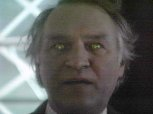
Hastur the Unspeakable
--
(The Beginning of all Beginnings)
The echoes
and memories of true Evil become
anti-life impulses inherent in the new Universe.
Hastur the Unspeakable
(Fenric)
is formed out of these impulses.
This primal force of nature
becomes a Great Old One
and
will be responsible for the creation of the Fendahl.
--
(The Time before Time)
The Seven Shadows are created. They will
later be put into a flask and used to imprison Fenric.
-- After an unknown number of cycles, the gestalt entity known as the Nestene Consciousness or Shub-Niggurath comes into existence.
-- Rassilon believed that Raag, Nah, and Rok were responsible for the destruction/creation of several universes. These three would become the Guardians of the universe right before the current one.
-The Book of the Old Time
-- The Shub-Niggurath (Nestene Consciousness) and perhaps other beings (probably Nyarlathotep) survived the creation of the previous Universe. In this Universe, space was green instead of black, and stars looked like giant doughnuts.
The remains of a Lord of Time from the previous Universe
--
(the Universe before the current one)
The Archons evolved from underwater aquatic species
that used echo location.
They speak using the language of Quantum Mnemonics. The Archons ruled the previous Universe. There are
Time Lords in this universe. The Shub-Niggurath becomes the
Director of the CIA of this Universe's Time Lords.
She holds sway over this universe.
--
(in the Universe before the current one / a long long time before the birth of the current universe)
Using the
power of astrology, the Ancient Lights control many of the species and
worlds in this Universe. The Mandragora Helix is one of the Ancient Lights.
-12,000,010,000 (10,000 years before the Cathedral was built)
The Grey Man's People (probably the
future Guardians) observe the evolution of the First Humanoids in a
star system 30,000,000,000 light years from where Sol will be.
-12,000,000,000 (15 billion years before the 20th century)
The
first humanoid civilization destroys itself. In response, the
Grey Man builds the Cathedral Metahedron. Given when all this
happens, it appears that the Cathedral will survive into the next
universe.
-- A war breaks out involving the previous Daleks and the previous Key to Time. Realizing that the end of this Universe is upon them, the Old Time Lords of the previous universe shunt themselves into a parallel universe (with a slightly longer lifespan) to escape this destruction. The Archons watch the Universe die. They become the Great Old Ones. None of them remember the previous Universe. The sentient void left in the old universe will become the Dark when it reforms (after the Big Bang).
Event 1 - At the end of the War, three of the Guardians of this Universe (who will become the Gods of Ragnarok) caused the end of the Universe by creating instabilities in one of the engines of a massive Timestation. This Time Station has a Main Space Time Element (the Heart of a TARDIS) that is virtually identical to the one in TARDIS and probably belongs to the Old Time Lords of the previous Universe. In response to the instabilities, the Timestation's single large humanoid pilot ejects fuel from the unstable engine. This ejected fuel is a condensed monoblock of matter that detonates when another timeship (from the next Universe), named the Vipod Mor, materializes at its center. This detonation creates the Big Bang. The universe expands out of the monoblock singularity. There is a massive inflation that lasts less than a millionth of a second. The Big Bang knocks the Timestation into the future and leaves it floating at the precise center of the Universe (so very near Gallifrey's system). Mutter's Stellian Spiral Galaxy will form around the Timestation and it will later be given the name Terminus by Terminus Incorporated. The Time Lords will refer to the Big Bang as the Kinetic Dance.
Note: the idea that the Timestation came from the previous Universe is emphasized in the script for Terminus.
-10,000,000,000 (moments after the Big Bang / Archons existed at the beginning of time)
The Great Old Ones enter this new Universe through the Blind Idiot God of Chaos known as Azathoth (a sentient black hole), aka Ezu, the Gate of a Million Spheres. The Great Old Ones known as the Archons emerge to watch the Universe's rebirth in a blast of music and light. Using the language of Quantum Mnemonics, the Great Old Ones discover they have amazing powers in this universe. Using this language they could re-write reality and even bring about the destruction of this universe. However, the rules of their game prevent them from interfering with lesser species directly. As time advances from the destruction of their original universe, the laws of relativity increase the lifespan of these elder - effectively making them immortal. They are also very resistant to almost any phenomenon in this new Universe.
-10,000,000,000 (the start of the Universe)
The Council of Eight has Sabbath seed an intelligence into the formation of the Universe. This intelligence becomes part of the fabric of the Universe, and gives the Council the ability to map out all of history after the fall of Gallifrey.
The Universe can't settle down to manifest laws and elements because of the presence of the Soletract. The Soletract was a consciousness, and energy that was inherently antithetical to the new Universe. The forces of the Universe exiled the the Soletract to a separate 'unreachable' plane ot existence. This allows the Universe to begin making sense and function. Soletract's plane would be destabilized and corrupted if to many sapient beings from Normal Space were to visit it. Many Time Lords theorize that Vampire Yssgaroth weren't a species, but a side effect of two incompatible continual strata trying to coexist. It is quite possible that this Soletract Plane is the dark universe in the Vortex's Under-History. If so, that would make the Soletract the unwitting source of the Yssgaroth and their vampire children.
-10,000,000,000
(right after the Big Bang)
In the beginning Magick, not science, was the dominant operating system of the various Universes – including universes before, afterwards, and sideways of the current one. In this era the irrational force of Odic
Energy was plentiful. Causality was largely structureless and at the
mercy of those who could wield Odic Energy. Odic Energy made miraculous
healing and acts of prophecy possible. Causality is largely structureless at this point and
some minor paradoxes form within the first picosecond of the Universe's existence. Three minutes after the Big Bang the universe cooled to the point where nuclear fusion begins creating the first
hydrogen and helium nuclei.
The Anti-Matter Universe has existed since the beginning of Time. It can only be reached via the singularity
at the heart of a black star or by crossing certain barriers at the edge of the Universe.
The Eleven Dimensional Universe
The 11 dimensions begin to solidify from the chaos. The three spatial (dimensions 1-3) and two temporal dimensions (4-5) form first. The remaining 6 dimensions curled up to become the Six-Fold Realm (aka Calabai-Yau Space). The Space-Time Vortex (dimension 5) is originally known as the Astral Plane. Two of the dimensions might be named Possibility and Imagination. Without time travel to interfere, time moves as a harmonious and elegant parabola. Ionic energy can convert fiction into reality and vice versa. The realities of other dimensions can manifest themselves in the Normal-Space universe as works of fiction. There are 4 forces in the universe, Gravity, Electromagnetism, Strong Nuclear, and Weak Nuclear. It is the Weak Nuclear Force which allows the existence of the 5th Dimension. The Great Desolation is the area of space at the edge of the Universe, and is described as where mythological beings go to die. Almost no one has ever returned from the Great Desolation. The Universe has 9 such corners. The Universe will continue to expand for billions of years. Any attempt by someone in the current Universe to travel back in time to the previous Universe will end with the traveler being trapped in a formless, timeless dimension.
| Number | Dimension | Color | Guardian | Key to Time |
|---|---|---|---|---|
| 1st Dimension | Length | N/A | N/A | N/A |
| 2nd Dimension | Width | N/A | N/A | N/A |
| 3rd Dimension | Height | N/A | N/A | N/A |
| 4th Dimension | Time/Thought | N/A | N/A | N/A |
| 5th Dimension | Space-T. Vortex | N/A | N/A | N/A |
| 6th Dimension | ?? | White | Structure/Order/Light | 1st Segment |
| 7th Dimension | ?? | Black | Chaos/Darkness/Entropy | 2nd Segment |
| 8th Dimension | ?? | Red | Justice/Morality/Doctor | 3rd Segment |
| 9th Dimension | ?? | Azure | Equilibrium | 4th Segment |
| 10th Dimension | Imagination | Crystal | Toymaker/Dreams | 5th Segment |
| 11th Dimension | Possibility | Gold | Sentience/Life | 6th Segment |
The beginning of the Old Time. The Old Time will last until around the time the Time Lord society is founded.
-10,000,000,000 (at the time of the Big Bang)
The Time Lords of Gallifrey (that are trapped in a single moment after the Last Great Time War) find the remains of one of the cracks in the skin of realty. They use it to broadcast a message throughout all of time and space. Because of this, it becomes the oldest question in the Universe. The question is “Doctor Who?” The Time Lords are looking for the Doctor’s original name, and they believe he is the only one in the post Time War era who could can correctly answer the question.
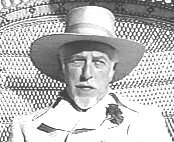
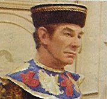

The Guardians of Light, Chaos,
Dreams
and Justice?
-10,000,000,000
(Earlier then the Time Lord historical records reach / the childhood/infancy of the Universe)
The Great
er
Old Ones
that were High Council of the Old Time Lords
become
elemental forces and an integral part of the new Universe.
Together they are the Six-Fold God
known as the Grace.
This is why the Grace us always referred to as plural.
The Six-Fold God
The Grace are probably huge and pan-dimensional elemental beings with amazing powers.
The Six-Fold God is made up of
six
hyper-dimensional
Guardians:
Light
(Structure /
White), Chaos
(Entropy /
Black),
Justice (Red), Dreams (the Toymaker/Crystal), and the twins: Equilibrium (Azure), and Life (Gold).
The Guardians must perform all large actions in unison, otherwise cosmic balance will be upset.
But Guardians
have been described as impish creatures,
and as
spirits of mischief. T
he majority of t
he Grace spends much of its time squabbling with the individual Guardians. Each member of the Council of
Guardians answers only to the Grace, and the
Grace is even capable of banishing the Guardians.
The Grace lives outside the Universe's first 5 dimensions in
the howling void of the Six-Fold Realm (aka Calabai-Yau Space). This realm is dispersed throughout eternity but
can be reached via the Chaos Pool found at the end of the Universe.
Each Guardian is granted a dimension to serve as their domain. Due to rules created in the Universe's childhood,
they can only survive outside the sliver of their dimension for about four weeks. As the Guardians get further
from Event 1 their life-span is pushed back, effectively making it endless.
When
the Grace does reach into reality they can only be perceived by the
lesser species as a subtle feeling of misgiving.
The Guardians can only contact lower primates when the primate's brain has been knocked into an altered state.
Among the Time Lords, only those who have served (or are serving) as President know of the true nature of the Guardians.
But it is impossible for lesser species to really grasp or understand anything about how the Grace thinks and why they
do the things they do, but in general terms, the Grace spends all of their time keeping the Universe in order.
They serve as conduits through which the fundamental essence of
the Universe can act and
are
essential for cosmic balance.
The Guardians nurtured the early civilizations of the universe,
and one of their jobs is to ensure that the Time Lords do not abuse their abilities to manipulate the Weak Nuclear Force. The Guardians know there will come a time when they are no longer needed and that their existence will end.
- The White Guardian exists near the Big Bang, and the Black Guardian resides at the moment of heat death. The Black and White Guardians are each given responsible for 50% of the reality of the Universe, and its first 5 dimensions. The conflict between the Black and White Guardians creates the Universe as perceived by the lesser species. This balance between ridged order and total chaos is needed to ensure a dynamic living cosmos. The Black Guardian is strongest as the far end of the universe and the White is weakest at this point. According to Gallifreyan science, the only thing that can stand against entropy and random decay is Life. But, in theory, they are perfectly balanced. If the Black Guardian were ever to defeat the White, he would become the undisputed ruler of Reality. However, the process of gaining an advantage over the other would cause the Universe such suffering that it would begin to come apart. If the Black Guardian gained control over the Universe he would remove the meaning of time itself. The Guardian of Structure appears less likely to lie then the Guardian of Chaos.
- The Celestial Toymaker (aka the Crystal Guardian) 's sliver of reality is known as the Celestial Toyroom. The Toymaker carries part of the previous universe with him, which keeps him from being subject to this Universe's laws. The Celestial Toymaker is the Guardian of Dreams so the dimension of Imagination might be where the Toymaker's Toyroom and the Land of Fiction was located. Almost everyone in the Galaxy dreams, and dreaming allows one's mind to travel through time and space. The mental activity produced during REM sleep is very similar to the a bivarity anomaly quartz created naturally by friction of the various universes grinding together. Ionic energy can convert fiction into reality and vice versa.
- Hecuba was another of the Guardians, probably Equilibrium (the Azure Guardian). She was the sister of the Toymaker (the Crystal Guardian), and like that Guardian, also delighted in challenging higher evolutionaries, and even lesser species to a variety of puzzles. She was fascinated by time and time keeping, and called herself the Queen of Time.
- The member of the Old Time Lord High Council known as the Renegade becomes the Other and will live on Gallifrey. He will eventually become the The Red Guardian of Justice. The Great Old One, Hastur the Unspeakable, believed that the Doctor was a Great Old One. The Doctor's earliest, and most buried, memories (before his Morbius incarnations) is standing alone on a mountainside in the dark with a cold wind blowing. He is an old man, and he raises his fist. This is both how the cycle of his life begins and ends.
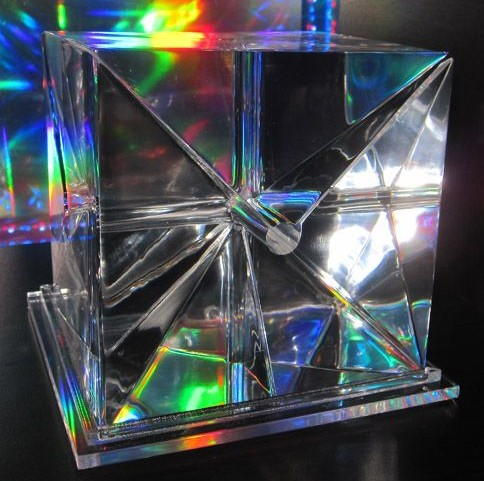
The Key to Time
The Universe is finely balanced between chaos and structure, allowing its constant self-regeneration. Such a balance is needed to ensure a dynamic living cosmos. This defiance of the future laws of thermodynamics allows the Universe to be effectively immortal. In theory Guardians of Chaos and Structure are perfectly balanced, but if one started to gain an advantage over the other then the Universe would begin to come apart. The Key to Time was designed by the Grace to re-balance things when this happens. It serves as a moral fail-safe to rest the balance of good and evil. This makes it the most important object in Creation. The Key is created out of a nearly indestructible artificially matricized structure consisting of a substance with a variable atomic weight that borders on magical. This abstract material is forged in the Chaos Pool found on the planet Chaos in the last 6 minutes of the Universe's life-span. The material embodies the fundamental nature of the universe and exists simultaneously at every point in time. This property prevents is from being analyzed. The substance is sometimes used by the Guardians to fashion communicators for lower lifeforms as well as the Crystal of Kronos and Enlightenment. Enlightenment could be used to alter time streams and the events within them. The Key is a perfect cube (6x6x6) made of six parts and holds the elemental force of the Universe. These segments maintain the equilibrium of Time itself. It can stop and start the Universe, re-write matter, change the states of quanta, and alter the balance of good and evil throughout the Universe. The Key gives the user access to every event in history, and the ability to alter those events. Only the Prime Eye of Harmony on Gallifrey is its equal when it comes to manipulating the power of the Vortex. The sixth segment is the most important of the set. The Key might have been some form of Time Manipulator? Each Guardian is represented by one segment and together, t he Key represents the powers of the Six-Fold God (aka the six Guardians). The Guardians use the complete Key to maintain universal balance between order and chaos. Any being that has the complete Key has absolute power over every particle in the Universe. To prevent any one being from having this much power the six segments of the Key are disguised and scattered to specific points in space and time. If one has 5 of the 6 segments a temporary segment can be made out of specific materials. Chronodyne is 74% compatible and can be used (with the other 5 segments) to put the whole Universe into a 3 second time-loop for 3.25 minutes before the Chronodyne burns out. The Key to Time is eventually destroyed by being evaporated in the Chaos Pool 300 years before the start of the Last Great Time War in heaven. This might have been what allowed the Time War to occur.
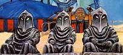
The Gods of Ragnarok
-10,000,000,000 Three of the Guardians from the previous Universe become the Gods of Ragnarok (Raag, Nah, and Rok). While they were responsible for destroying the previous Universe, they have relatively little power in this universe and exist in a bubble of their own universal laws. Rassilon believed that Raag, Nah, and Rok were responsible for the destruction/creation of several universes. They later create the Land of Fiction. The Masters (or Mistresses) of the Land is dependent of the fictions created by others and can not create their own narratives. This land might have been located in the Nowhere of the Dimension of Imagination. This dimension of Imagination might where the Toymaker's Toyroom and the Land of Fiction was located. Ionic energy can convert fiction into reality and vice versa. The other three Guardians from the previous Universe become the Arma, Gedd, and Onn. One of these last three was the Renegade from the previous universe.
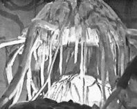
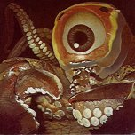
Yog-Sothoth, Lloigor, and Shub-Niggurath
The other Great Old Ones (Old Time Lords from the Previous Universe) become the Transient Beings (or Sub-Guardians). The greatest and darkest is Nyarlathotep. Other Great Old Ones include the Ancient Lights (including the Mandragora Helix), the Time Lord military strategist Yog-Sothoth (the Great Intelligence which lives in the Astral Plane known as the Vortex), Senior Watcher Lloigor (Animus), Dagon, Azathoth, Cthulu, Director of the CIA Shub-Niggurath (whose daughter will become the Nestene Consciousness), Elder God of Chaos Moloch (ally of Weyland), Hastur the Unspeakable (Fenric), the Elder God Weyland (enemy of Fenric), Melefescent, the Archons, and Gog (Gog and Magog). Other 'Things Unspeakable' from the Dark Times: the Ancient Lights ( the Mandrogora Helix ), the Cerrunos, the Valdemar, the Primeval Beings, the Dark, the Chlutu, and Narytholotep. Of the Great Old Ones, Moloch, the Nestene Consciousness, Fenric, and (probably) Weyland survive the creation of this Universe just as they survived the last. Moloch is the oldest of the Elder Gods. Most if not all lose their memories from the previous universe. Gog and Magog probably become the Ogri of Ogros in the Tau Ceti system. The Archons are one of the Old Ones. These multidimensional beings become the rulers of Time. They moved and danced to the gravitational movement of the stars and the planets of the cosmos (the Music of the Spheres). They are more complicated then the Time Lords of Gallifrey.
-10,000,000,000 (The big bang / earlier than a TARDIS can safely go)
The Old Ones exist,
including Valdemar.
-10,000,000,000 (Nanoseconds after the Big Bang)
The Vondrax come into being (they might have been created by the Old Ones)
They feed on the tachyons that are plentiful at this point in time.
When their supply begins to run out they start traveling through
space and time to collect more tachyons in their orbs.
NOTE: There is some evidence to support the idea that the Doctor Who takes place in the same Universe as the Hitch-Hiker's Guide to the Galaxy. Most notably the book Origins of the Universe by Oolon Coluphid appears to exist in both franchises. However the Earth is destroy in every single timeline in the book Mostly Harmless which means that something more complex than just an alternate timeline is separating the two Multiverses.
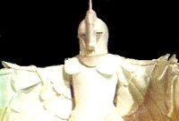
-10,000,000,000 The Chronovores (aka Kronovores) were created by the Council of Guardians on the artificial planet Darkheart. In order to sustain themselves while evolving into transcendental beings, the Chronovores used a nearby neutron star to create the Darkheart Feeding system. At the time of their birth, the Chronovores fail to meet the Council's standards. They are considered to be vampires (because of their feeding habits) and are segregated from the Eternals to become the Dark Caste. Like, all of the Transcendental Beings, the Eternals are bound by the Great and Ancient Covenants. The Celestial Toymaker (aka Guardian of Dreams) nurtures the early civilizations of the Universe, creating planets and cities for them (probably including the Darkheart).
Chronovores
Chronovores are almost certainly an Order of transcendental beings within the biological classification system, with numerous different 'time eating' species existing within that order.
- Vortisaurs (Pterosauria vortexfera): These are scavengers that inhabit the 5th Dimension and feed on temporal energy (including that which is found in Time Lord blood). They are uncomfortable in the 3 dimensional universe but can survive for some time. Their 5-dimensional bite can age something 30 years.
- Sirens of Time: feed on temporal distortions created by changes in history. While they are incapable of changing history themselves they can enslave anyone who answers their call more then once.
- The Weeping Angels (aka Creatures of the Abstract, the Lonely Assassins): They came into being near the beginning of the Universe. Their physiology is quantum-locked meaning that when any sentient being observes them it crystallizes history freezing them in place. They can't even look at each other. These hunters change history by sending their victims back in time and then feeding on the potential temporal energy that makes up the original timeline. The Weeping Angels were probably created to serve as assassins. Not even the Time Lords know where they come from but their feeding habits, appearance, and abbility to shift people through time indicated that they are almost certainly another cousin to the Chronovores.
- The Tar-Modowk: From from the Meg-bania, they exist within the Vortex and ride Vortisaurs. They feed on time anomalies.
- The Reapers: They appear to be a sub-type of Chronovore. Each one is born within the Vortex. They cauterize temporal paradoxes by consuming the histories of everyone around the paradox - effectively severing it from history. This helps prevent the damage from turning into universe-wide changes in History. The older a piece of matter was the more difficult it is for them to breach it, but the Blinovitch Limitation Effect can help them to overcome this limitation. Because of the damage they caused, the Time Lords prevented them from entering normal space. After the Time War they were free to do so, and nothing the N-space universe could damage them.
- Lillith's Chronovores: These sapient Chronovores live in the Vortex but feed in off the Lux Aeterna in the Six-Fold Realm. Their Matriarch is named Lillith. They exist as six-dimensional polymorphic lattices of non-baryonic matter (such as photinos and chronons), bound by super-strings. They feed on time (specifically chronons) and are essential to the ecology of the Universe. They prefer to devour temporal paradoxes, parallel universes, and other time problems but are capable of feeding on anything that enters the Vortex. Their life-energies of most are inimical to humanoid existence. Though they are above the laws of the universe and are magic personified, they work to maintain the laws of physics by removing the stresses and strain on the laws.
- The Temporon is a distant cousin of Lillith's Chronivores. They are composed of temperon particles.
- The Furies were developed by the Curia of Nineteen as a defense force. They live in the Vortex and can only be remembered by their intended targets (and Time Lords). The existence of the Furies is kept secret because the Time Lords probably punish the Curia if they found out. Like other Chronovores they feed on temporal energy from the Vortex. They can only survive 1,300 years without sustenance.
-10,000,000,000
(after the Chronovores are created)
Eternals:
The Eternals are cousins of the Chronovores and
have existed since they were created by the Council of Guardians. They were abandoned by their parents at the beginning
of this Universe.
These
transcendental beings exist outside Time
and Space in the Domain of Eternity as six-dimensional polymorphic lattices of photinos and chronons,
bound by superstrings.
The Celestial Toymaker (aka Guardian of Dreams) nurtures the early civilizations of the Universe, creating planets
and cities for them.
The Guardians seek fulfillment through the Eternals and
the Eternals seek fulfillment through the thoughts of Ephemerals and
feed on imagination. They can freeze an Ephemeral's personal time
stream and can create anything that an Ephemeral can imagine. The Patriarch of the
Eternals is Sadok. Other Eternals might be the Gallifreyan Gods
Pain, Vain Beauty, Death, Time, Light, and Life. Every Eternal has a mortal Champion.
Like, all of the
Transcendental Beings, the Eternals are bound by the Great and Ancient Covenants.
Most of the Higher Eternals believe they have a responsibility to those who worship them, and try to live up to
their expectations. But some focus on their own agendas.
The Council of Guardians and other Old Gods will often arrange games and tournaments for the Eternals.
By the time of the Doctor many Time Lords will see the Eternals as little more the legends.
For more information see:
Gallifreyan Mythology
-10,000,000,000
(the childhood of the Universe)
Other transcendental beings include Vortex Sharks, the Time Vortex Wraiths (which number in the billions but were destroyed shortly after the Time War in Heaven), Vortex
Dwellers (ooze like creatures that can re-arrange time),
Chronomites (small white worms that can loop their own history to continual re-create themselves),
and the Time Corrosion Fungus (which attacks timeships with insufficient defenses).
These
beings also exist in the Six-Fold Realm (Dimensions #6-11 aka the
Center of Time) or the Vortex (Dimension 5). All of the Transcendental Beings are bound by the Great and Ancient Covenants.
-10,000,000,000? (from A History of the Universe)
The Gods of Ragnarok and the Eternals wrote
down the rituals that constrain the Chronovores. The Daemons will eventually copy these texts.
-9,999,998,000
(for the first two millennium of the Universe / when the
Eternals were young /
the first time there are multiple space-faring civilizations / one or
two thousand years before the Kotturuh begin bring death / during the Dark Times / before the Eye of Harmony)
The Golden Age: All the major powers of the
cosmos got along quite well for the first couple millennia. The
civilizations of the Universe thrived in a harmonious state, learning
and growing from their mistakes. Heroism, exploration, and
discovery define the Golden Age. An these heroes built upon the
accomplishments of the previous heroes. Knowledge and wisdom was
accumulated and used to enhance life. This lasts a few billion years.
Even after it ends, the echoes of this Golden Age will survive in the
subconscious of most sapient beings, causing many to feel that the past
was better than the present.
-9,999,997,000~ (Only a few millennia after the Universe comes into existence)
The Celestial Toymaker
(aka Guardian of Dreams) grows bored
with nurturing the early civilizations of the universe, and starts to destroy them instead. But this too grows
boring. He
eventually finds distraction in the world of games. In a hollow beneath
the Under Universe he creates the Celestial Toyroom. The Toymaker often
slips out of his his domain to force lesser species and
occasionally even higher evolutionaries to play his games.
?
(the Dawn of Time)
The Eternal Elektra and the Chronovore Prometheus
conceive a child in defiance of the Ancient Covenants. That child, Kronos is the greatest and fiercest of the Chronovores. He is imprisoned in the Crystal of Kronos
by the Council of Guardians.
??
(before the Time Lords)
The energy beings known as the Constructors
of Destiny come into existence.
They might also be know as the Halldons.
This time zone of formative continuum is the location where the Head of the Presidency traveled in search of the Enemy. Though outside the Noosphere of a normal TARDIS's capabilities, the expedition was expected to be successful. The President never returned. The Ancestor Cells are drawn to Gallifrey by I.M. Foreman's Universe-in-a-Bottle. The Time Lords will spend much of the Last Great Time War believing that these Ancestor Cells are the Enemy.
? (the Dawn of Time)
The Beast of all evil will begin to subtly affect life throughout the Universe. The Beast will be the template for evil and numerous cultures will have legends inspired by it. He is known as Krop Tor, Satan, Lucifer, the King of Despair, the Deathless Prince, the Bringer of Night.
-9,999,980,000~ (before the Rassilon Era / billions of years before the 20th century / at or before 4.6 billion BC /
before the Time Scoop is created / the early millennia of the Universe / before the Eye of Harmony)
The end of the Golden Age and the beginning of the the first Dark Time. The Dark Times are considered to be one of the most dangerous points in the lifespan of the Universe.
It will last
aeons.
The Universe has now expanded to several million light-years across and is now only 3,000 degrees Celsius. Electrons begin orbiting the hydrogen and helium nuclei, creating the first atoms.
?? (the beginning of the Universe / possibly the coordinates given by the Master to Head of the Presidency - so 13,500,014,400 BC?)
In a time zone of formative continuum (outside the noosphere of a normal TARDIS's capabilities) the interactions between dimensionally unstable spacedust and multidimensional wormholes leads to the emergence of the Ancestor Cell. All naturally evolving life in the Universe descended from this single Ancestor Cell. These cells were not the first living things. But the organisms that evolved from them were. These organisms spawned all naturally evolving (ie non-engineered) life in the Universe. According to Gallifreyan science, the only thing that can stand against entropy and random decay is life. At this point, all life has a potentially infinite lifespan as mortality and life-spans had not been introduced to the cosmos. Lifeforms do not age, and their biology continues to regrow and thrive as if they were young, no matter how many years they have lived. Only physical accidents or deliberate violence could lead to death. It’s likely that cancer like mutations were impossible and, by implication, nothing died of viruses or disease. But all life relies on the death of others. While the first living cells are eventually consumed by other, newer, forms of life, the Ancestor Cells remained. Over the next several billion years it feeds on the time pollution from various time travel capsules.
?? (one of the original species from the birth of the Universe)
A species compose of sentient helium atoms evolves. They are known as the Sentients.
Etra Prime (aka Planet One) is probably one of the first planets to form in the Universe. By the Humanian Era it will be the oldest planet in the Universe. The planet has crystals made of the apocalypse element that contain entropic power. They are capable of shredding the raw fabric of space-time in an unstoppable reaction. It also has a cliff made of crystallized carbon (diamonds) with a message carved into them from the dawn of time. The message consists of the words 'HELLO SWEETIE' and the coordinates for Salisbury Plain on Earth in the year 102 AD. Its possible that the Apocalypse Element might be fuel left over from the Terminus Timestation.
?? The planet Hindmost will form in one of the 9 corners of the Universe. It is the furthest planetoid from Gallifrey that the Time Lords have ever found, and is barely large enough to stand on. A TARDIS would have to be re-engineered to reach it.
?? (the early millennia of the Universe / before any sapient life evolves from the Ancestor Cell)
The first life forms that exist in this Universe are massive creatures driven by primal instincts. There are flying horses, unicorns, bread-and-butterflies, dragons, faeries, slithy toves, and other illogical creatures. There are planets like giant apples with suns like red balloons. But no sentient life had evolved to observe these impossibilities, so these impossible things persisted.
-5,110,000,000 (4.6 billion years before life evolves on Gallifrey / 8,112,027,893 BC)
Gallifrey's system formed relatively early in galactic history. It is one of the first of what will eventually be 650 million systems with planets that have G-Type environments (ie Earth-like). It is located very near the center of Mutter's Spiral. (TID implies it is located very near the edge of the Mutters Spiral.) For more information see: Gallifrey's Star System
-5,000,000,000?
(billions of years before the Time Lords come into existence / before Gallifrey was named Gallifrey / before Rassilon)
The Untempered Schism is on Gallifrey. This and other rifts are thought to have formed naturally on Gallifrey, but they might have been placed there by the Constructors of Destiny. The Crevass of Memories That Will Be is probably another Rift. The people of Gallifrey are first exposed to the Schisms. This will affect their evolution. It might have also been the source of the White Point Stars and Taranium that was found in the star system.
-3,500,000,000 (about 7,000,000,000 BC)
A Death in the Family: Human time travelers
from the UNS Pelican settle on this world in the distant past.
-3,000,000,000
(6,502,027,893 BC)
Gallifrey's sun ignites.
-2,500,000,000 (about 6,000,000,000 BC)
The sapient Cthalctos of 16 Alpha Leonis
One is destroyed by a black hole.
??
(aeons before
the Time Lords)
An elder species of blue skinned
humanoids experiance billions of years of heroism, exploration, and
scientific discovery. Mr Saldaamir will be a member of this
species. These might have been the Constructors of Destiny and/or a Halldons.
-1,500,000,000~
(5 billion years before the 1980s / 5,000,000,000 BC /
5-6 billion BC / before the Era of Disembodiment)
The Kystra's
Era of Embodiment occurs. This species had technology that could
manipulate matter on the level of quantum functions. There were
displays about their accomplishments in one of Gallifrey’s museums of
ancient times. The supernova that destroys the Kystra’s homeworld leads
to the creation of the Sol system. Sol is located in Sector 8023 of the Third Quadrant of Mutter's Stellian Spiral Galaxy on its inner spiral arm at the
coordinates 6309.
-1,500,000,000
(5,000,000,000 BC Timelink / 6,500,000,000 before the Eye of Harmony from HOU??)
Castrovalva:
Event 1 occurs. A massive singularity starts to form in the middle of the Stellian Galaxy. Mutter's Stellian Spiral Galaxy (aka the Milky Way) forms out of a huge in rush of hydrogen. The time force of
this event is so immense that it is almost impossible for a TARDIS to escape its field.
The resulting radiation from this singularity blasts the galaxy free of all its remaining interstellar hydrogen
and helium. The Galaxy will be named after a famous
Gallifreyan explorer named Mutter Stellian. About a thousand of the worlds in this Galaxy will have sapient life by the time of the War Games.
The population of sapient beings in Mutter's Stellian Spiral Galaxy in the Sensorian Era (between 3000 and 4000 AD) is around
15,665,000,000,000,000,000.
-1,500,000,000 (5 billion years before 4663 AD)
Skaro's sun ignites.
-1,500,000,000
The Sol system's sun ignites. Sol
is located in Sector 8023 of the Third Quadrant of Mutter's Stellian Spiral Galaxy.
-1,100,000,000?
(before the Rassilon Era / billions of years before the 20th century / at or before 4.6 billion BC /
before the Time Scoop is created
/ after Gallifrey is born / a long time after the Gallifreyans have evolved)
The beginning of the the second Dark Time (aka
the Dark Days,
aka the Time of Night, aka the Time of Stones). The Dark Times are considered to be one of the most dangerous points in the lifespan of the Universe.
It will last
aeons until the beginning of the Rassilon Era.
-1,100,000,000??
(after the Milky Way Galaxy formed)
The Great Old Ones known as the Archons
were the rulers of Time.
They moved and danced to the gravitational movement of the stars and the planets of the cosmos (the Music of the
Spheres).
The Archon Empire was the size of the Galaxy.
On an incredibly old planet in the Great Desolation, at the edge of Universe, the Archons build the endless city out
of black glass and gold.
??
(during the Dark Times)
One of the Great Old Ones has a space
ship known as the Infinite. The heart's desire would be granted to anyone who entered the ship. Until
at least the 40th century people would go on quests for the Infinite.
?? (a very long time before the 20th century)
Six Physical Temporal Nexuses (PTN) were
created. They could register the users wishes and desires and then shift the user into the parallel universe
where their wish was coming true. The Time Lords will later try to collect them all. One will be found
on Usurius, two on Kirith, one (the Spear of Destiny - Gungnir) will be found on the Earth.
Its possible the Great Old One's ship, the Infinite was also a PTN.
??
(during the Dark Times / probably before the Time
Lords)
The Higher Evolutionaries known as the Parallel Sect were
dimensional pioneers who could cross dimensions at will. They had symbiotic nuclei and
were considered to be a myth on many worlds including Gallifrey. They were said to have created a web of all the parallel
timelines.
The Phaeron were a species composed entirely of dark matter who were one with space-time. They create a massive network of wormholes that connect various parts of the entire Universe.
?? (before Gallifrey or most other star systems had formed)
The original Necronomicon is created, describing the activities and powers of the Great Old Ones. The Necronomicon is the book of dead names, and also speaks of the time before this Universe. Everything the Time Lords know about the Archons comes from the Necronomicon. The Gallifreyans have stories about the Nameless City of the Archons and the TARDIS records will claim that they were the last of the Great Old Ones. The Necronomicon cause severe bruises on a Time Lord’s skin (but not a human's skin) if they touch it. The Master will be obsessed with this book.
-1,100,000,000?
(before the Earth forms)
The time witch Brimo is imprisoned for attempting
to conquer the world of Nefrin.
-1,100,000,000?
(when the Earth is still dust and gas)
The reptilian Veil are conquering worlds.
-1,100,000,000
(during the Dark Times / ~4,600,000,000 BC /
this is one of Gallifrey's earliest interventions / when the star Sol is young)
Empire of the Racnoss: The Doctor rescues the last clutch of Racnoss eggs from the warring
Racnoss factions and the Fledgling Empires. He takes the clutch back in
time (when most of the stars and planets haven’t formed yet) to the
dawn of time to a forgotten area of Sector 8023 of the Third Quadrant of Mutter's Stellian Spiral Galaxy. The Racnoss' Webstar ship, the Secret Heart,
becomes the center of the planet Earth as if forms around it. It will take
billions of years for the Racnoss Empress to find her children. According to Gallifrey's records, Sol III is one of the only worlds in the cosmos to have the word 'the' before its name,
(ie The Earth). The 10th Doctor claims this is the furthest back in time he has been.
-1,000,000,000 ???
(1 billion years before the Logopolitans begin draining off Entropy /
~4,000,000,000 BC)
When the Doctor reassembles the Key to Time, in The Armageddon Factor, one of the segments is damaged, due to the false
segment the Doctor used earlier. This damage allowed
the Black Guardian to
create a
tailored virus while the Universe is stopped. This virus creates
an imperfection in the White Guardian's re-balancing of the Universe
causing entropy to begin increasing at an accelerated
and even exponential rate. The explosive force of Event 0 is expended and the Universe ceases to expand. The cosmos hangs in equilibrium.
This will last 1 billion years.
Early Gallifrey
-600,000,000 (600 million years before the Eye of Harmony /
4,012,027,893 BC)
Life
from the Ancestor Cell arrives on Gallifrey and begins to evolve. The Untempered Schism affects the evolution of life on Gallifrey. A
common side effect of living next to a wormhole over a few centuries is
that the populace will develop psionic powers. Such exposure can also
cause rapid mutations (like the forms of life on Alzarius). Life on Gallifrey moves quickly up the evolutionary ladder.
The planet might have been very much like Alzarius from E-Space and possibly had a Mistfall every 50 years.
For more information see:
The Planet Gallifrey, and its
Flora and
Fauna
-500,000,000~ (over 4 billion years before the 21st century)
The morphic field manipulator known as the Blessing
is buried deep within the Earth.
?? The Beast has a son named Abaddon who is trapped beneath the Cardif Rift on Earth.
?? (The Dawn of Time / after the Earth forms / probably
before the Eye of Harmony)
Malignant fairies and wraiths thrive
on Earth. They might be related to the Mara.
?? (at the time of the first mammals)
In the space between the first 8 dimension
the Unity of the Scourge comes to exist.They are the inner feeling of self-doubt in every humanoid
in Normal Space
and they feed on depression, doubt and despair they create.
??
(before the Time Lords [Gallifreyans?] walk the planet)
The Stolen
TARDIS: The Saurian Age (Gallifrey's Jurassic Period) exists on
Gallifrey.
Great lizards like the Gargantosaurs
will continue to exist until the Time of Legend.
20 meter long reptile that resembles a brontosaurus with thick chitinous scales and serrated teeth. This might be the armored Dinosauria. Another
beast is a massive creature (twice the size of a hab-bloc) with 2 legs, 2 vestigial wings (with purple and white feathers)
and 4 eyes. This Age might last about 2160 years??
-11,010,007
The last Population III star, Qqaba, ignites.
?? (during the Dark Times)
The first sapient species to evolve begin developing civilizations. Most of these species (such as
the Racnoss, or the Qwerm) tend to be much more massive then
aliens that evolved in later eras. The Gallifreyans and Osirans were
the rare exception to this rule. It is theorized that the continual decay of the
gravitational constant of the Universe is making larger sapient
species less likely as time goes by. The Laima will eventually fix the gravitational constant at a single value.
-10,000,000??
(1-5
billion of years before 2003 AD)
The ancestors of the Constructors of Destiny
(one of the first Great Races to appear) guide and instruct the more primitive races of the Universe.

Pre-Neanderthal Gallifreyans? (before being modified by the Constructors of Destiny)
Neanderthal Gallifreyans evolve. These Gallifreyan Neanderthals did not evolve from anything embarrassing (like apes). They might have evolved from something similar to the Marshmen of Alzarius. The Constructors of Destiny modify the Gallifreyan Neanderthals to fulfill their destiny. The Untempered Schism continues to affect the development of these beings. A common side effect of living next to a wormhole over a few centuries is that the populace will develop psionic powers. Such exposure can also cause rapid mutations (like the marshmen of Alzarius). time bubbles are invisible to humans but Alzarians can see Time Bubbles just like Time Lords can. Before this event causality was largely structureless and at the mercy of those who could wield Odic Energy. Because they are the first sentient beings to evolve naturally from the Ancestor Cell they have a direct effect on all of the Space-Time Continuum. Only sentient beings can collapse quantum phenomenon and crystallize history. Biodata is a space-time map of this crystallization, thus only sentient beings (organic or technological) have biodata. It is a form of “time DNA” which defines a sentient being's reach/span in space as well as time. As a sentient observes the quantum flux of the universe, he collapses the uncertainties into facts. Thus it is the perception of the universe that defines it – making the meaning of the universe its primary foundation. As a sentient lives, he creates strands of meaning and understanding that mark out all he sees perceives. These are his bio-data strands. The Gallifreyans are beings made of Biodata and they are the first to impose “meaning” on the universe by their observations. In doing so, their Observations physically began to create the rules by which the Universe operated. The Gallifreyans create the first civilization as we understand the term.
-10,000,000? Null-Space (N-Space) is seperate but coterminous to the Normal Space-Time Continuum. It lies far far beneath the Deep Time of the Void found between alternate timelines. Every sentient being has a parallel N-Body leaves their corporal body at the moment of death. This N-body travels through Null Space to reach the Light. According to some legends the N-bodies that continue on might become Eternals. The High Eternal and conceptual entity, Death serves as a gatekeeper between Null-Space and the afterlife. However if the sapient's N-body is still too attached to the real world (usually through excessive negative emotions, but also because of an extremely strong will coupled with sense of their life being incomplete) then the N-Body will become trapped in Null Space in a desperate attempt to return to the real world. This could be why every sapient species in every galaxy believes in an afterlife and has developed a concept of Hell. Eventually, in most cases, these N-bodies eventually realize their mistake and continue on. But is some cases their soul fades till they are nothing more the interstitial phantoms hungering for artron energy. The Doctor has speculated that the nightmares of beings in Null-Space might have become the Great Vampires. Occasionally these interstitial phantoms escape back into Normal Space and attempt to possess the living.
Gallifreyan legends speak of a Null-Space called Nineveh where Gallifreyans go to die. This place is occupied the Watcher of Nineveh and is filled with ruined timeships. The Light that the human souls travel to might be the City of the Saved.
-10,000,000 (3,512,027,893 BC / ????? / Before humanity existed)
Under the influence of the Untempered Schism the first Shobogan Gallifreyans (one of the first Great Races) evolve into existence. They begin as a Level 1 Society mastering fire. These war-like humanoids called themselves Shobogans. They saw themselves as the Shadow People who existed in the shadows between the warm darkness of magick and the cold light of science. For this reason, they called their world Gallifrey, which translates as 'they that walk in the shadows.' Due to the Untempered Schism, early Gallifreyans might have developed a way of measuring time instinctively as a survival trait. This could explain why the species is later obsessed with conquering Time.
They are the first sentient humanoids to appear in the Universe. As such their morphic fields increase the chances of humanoids evolving on other planets. As these early Gallifreyans observed the Universe they set down laws to predict its actions. In doing so, their Observations physically began to create the rules by which the Universe operated. Non-human species will only be found on worlds where humans could not survive in the wild.
Morphic fields are created by the crystallization of history through observation by a conscious mind. Morphic fields don't follow the normal rules of the universe and are so complex that that a living mind is required to compute their mathematics. The shape and nature of every lifeform in the universe is influenced by the morphic field of that species. The artron energy created by a living being creates the morphic field as a sort of collective psionic aura which acts as a species equivalent to an individual’s biodata. The longer a particular species has been around the stronger its morphic field. These fields build up over several generations (probably as a side effect of the crystallization of history caused by observation). This is why there are so many species that look like Gallifreyans throughout the Universe. These early Gallifreyans are however only partly responsible for the number of humanoid species in the cosmos. For more information see: Ancient Gallifreyans
-10,000,000? (At least 5 billion years after the Big Bang / before any Gallifreyan had a nightmare / after regeneration?)
Prelude
Parasite: A bearded male Gallifreyan becomes the first of his race to
have a nightmare. He dreams of the beginning of the Universe and of a
life-form that is born at that time and lives 5 billion years. The
Gallifreyan believes he has discovered god and is terrified. He
resolves to risk everything to learn, build, and destroy, to conquer
matter, energy, time and everything else so that he won’t have to fear
god. He leaves his home to and spends the rest of his lives trying to
accomplish this.
?? The Kamishi (the self-proclaimed First Race) use SporeShips to accelerate evolution throughout the cosmos. The Khorlthochloi are one of the oldest races in the Galaxy. They guide developing species and eventually ascended
to a higher dimension. The Doctor believes that the Khorlthochloi's achievements outweigh even Rassilon's. Other ancient species are the people of Tivoli,
the Spraxis Jelloids of Bendalos, the space-faring Teuthoidians,
the Raab of Odonoto Ceti, the people of Benelisa, the Vondrax, the Xerxes, the Xylians, the Fendahl, the Carrionites, the Vashta Nerada, and the Krafayis.
The beginnings of Gallifreyan civilization. The early Gallifreyans build numerous walled cities all over the planet. In the modern era there are no historical records from the time when Gallifreyans wore animal hides and uses spears.
?? The Moon Pazithi is named after Pazithi the mystic virgin moon goddess. Pazithi will still be worshipped at the time of the revolution, despite the moon being covered in mining colonies.
?? (millions, possibly billions of years before the time of the Doctor / before there were any Time Lords / before Rassilon / after a stone ring was constructed around the Schism)
Seven 8 year old Gallifreyans are sacrificed to the Untempered Schism by the Sentinels of the Post Time War era. Their artron energy becomes trapped on the Earth.
-8,014,500 (4250 years before hyper-drive)
The
Gallifreyans enter the Bronze and then the Iron Ages of a Level 2 Civilization.
The early Gallifreyans had many wars, periods of regression, and periods of progress. The original Shobogans of ancient times evolved powerful
telepathic abilities due to their exposure to the Untempered Schism. Adult Shobogans were much more powerful telepaths then modern Gallifreyans, and the adult
minds of the planet were in constant telepathic entrelacement due to an
organ located in their hypothalamus. Entrelacement allows the mutual transfer of
emotions and large amounts of information very quickly. Shobogans often won’t bother to talk out loud during conversations – they just use telepathy. People who know each other well can sense each other’s experiences from miles away. All
of this created a collective consciousness known as the Thought-Pool. Each city develops its own
Academia to train the more gifted Shobogans. The Academia's are run by
Priests of the Menti Celesti. The Menti Celesti are Gallifreyan Gods and are made up of Pain, Death, and Time
(aka the daughter of the Timewyrm). The Gallifreyan Gods have the following colors attributed to them: Red and Black for Pain, White for Death, and
a shifting Gray color for Time. Prayer to the gods is usually conducted by individuals in a privet setting. The Menti Celesti
are
abstract universal conceptual entities, a
non-corporeal beings that can control time, and fate. Early in their history the Gallifreyans came to believe that if they killed all the evil people in the universe
then the good people who remained would become evil. Light can not exist without darkness. If evil were
destroyed then good would vanish as well.
-8,013,900 (3650 before hyper-drive)
The walled cities of Gallifrey become
the capitols of various city states that are ruled by City Warlords.
Without time travel to interfere with events, the future is easily predicted. Cause and effect is simple to track and foresee. The ability to see the future becomes an ability that can be attained by female telepaths. These visionaries developed their powers by staring into the untempered schism, but the development of precognition was extremely rare. Their minds were connected and nearly merged with the Astral Vortex. They could remember the future of specific people, places, and species as easily as their own past. Those women who spent too much time with their minds in the Vortex, became disconnected and catatonic. There are weak-points in space time that seem to be created by psionic effects of worship. When time sensitives interact with these small ruptures they can become full blown time fissures. In the City of Prydos the Order of the Sisterhood gains such power and foresight that it comes to dominate the cities of Gallifrey's southern continent.
?? (before space travel / when swords and armor were common)
Sirgwain and the Green Knight: A Ice Warrior’s ship breaks down on Gallifrey in the province of Barnakadon. The Warrior confronted King Halfur and tricked him into agreeing to provide aid in repairing the Warriors space ship. The warrior was quite impressed with the bravery and honor of the Knight Sirgwain and chose to spare his life before he left Gallifrey. During this time The Seers of Doom and the Valley of the Shadow were both dangers that could be found in the land of Barnakadon. This story becomes a popular fairytale told to time-tots.
The Crevasse of Memories That Will Be
-8,011,500 (1250 years before hyper-drive / an aeon before the Curse /
8,000,000 years before the time of Rassilon)
The Pythia is The Symbol of the planet's fertility, Mouthpiece of the
Gods, and Guardian of the Great Pythian Book of Future Legends. Like all life
in Universe, they had incredible life-spans. The Cavern of Prophecy
will be the heart of the Gallifreyan Empire. To see the future, a
Pythia sits in a wicker cage in the Cavern of Prophecy, under the
adytum of the Temple. She is suspended over the Crevasse of Memories
That Will Be. The smoky vapors from the Crevasse allow her to achieve
the state of clairvoyant and the state of clairaudiant. Humanoids
exposed to volcanic gases emitted by a future space-time crack can
produce prophecies of the short term future with a great deal of
accuracy. Longer term visions are also possible. They can read the
memories of a person they make eye contact with. However they will be
blind to any event directly triggered by the actual advent of the
space-time crack. It is likely that all of this applies to the Pythia. The Pythia can see the past by gazing into transparent star glass. Legend states
that constrictor snakes lived withing the Crevasse. It’s possible that the crevice of
Memories That Will Be could be the retro-active result of some future
crack in space-time. The Constitution requires that the Pythia name her successor. The
Court of Principals governs under the Pythia.
The Councilors of this court form a meritocracy. The Order of the Pythia will stand for an aeon (a hundreds of millions to billions of years).
The Great Pythian Book of Future Legends
recorded the prophecies of each Pythia. All truly impressive victories
for the Empire are foretold in the Book of Future Legends. The
Amphisbaena is a terrible beast described in the Book of Future
Legends. The book might also have predicted that a vampire would
be entombed on Ravalox and rise to lead his people as the Vampire
Messiah. Cadets at the Academia memorize the Book of Future Legends as
part of their training.
??
(when the Universe is still in its teens / during
the time of the Pythia) ??
(well before Rassilon was born)
-8,010,650
(200 years after space flight)
?
The
Gallifreyans master their entire solar system, making them a Type 2
Civilization.
?
(near the beginning of time) ?
(billions of years after
the Big Bang)
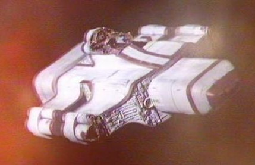
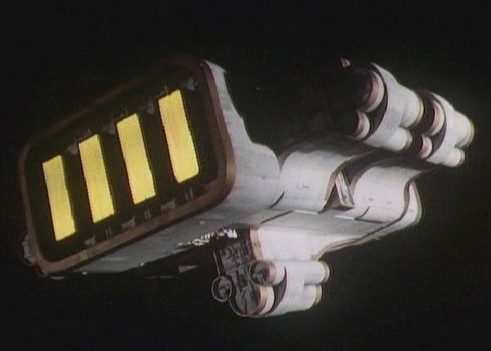
-8,010,250
(10,250 years before the Empire)
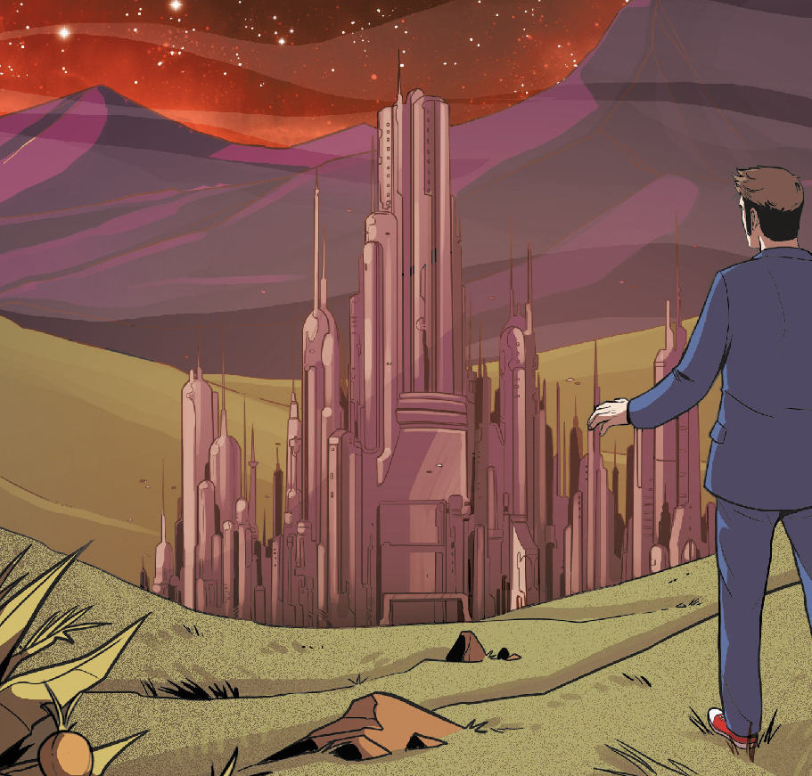
-8,010,000
(millions of years before TID / 250 after hyper-drive)
??
(before The Five Doctors)
-8,000,000
~
(They've had absolute power for 10,000,000 years /
10 million years before TID)
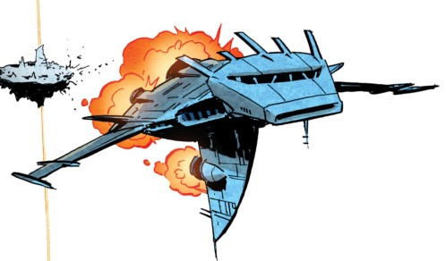
??
Astrafoils
begin being used for space travel.
-8,009,000~
(relatively quickly after inventing starships)
-4,580,000??
The
Reliquary of Accession holds the epiphany scrolls of Soneuramos. These
ancient sacraments were entrusted to the 217 Pythia in the sacred
firelake of Rag-Finish. ??
An ancient Pythian text cautions
"In my duty to defend existence I became mortality itself, the slayer
of spheres."
-4,000,000,000? (when the Universe is less then half the size
it will be 4000 BC /
before they give up on technology /
about 6,800,000,000 BC)
-3,990,000??
(before the enlightenment of the Time Lords) ??
(before the Omega is lost)
-3,420,000?? (During time of the 290th Pythia)
-3,420,000??
(before the Rassilon Era / billions of years before the 20th century /
at the time of the Colonialist and Restorationists)
-3,420,000??
(during
the Dark Times / before the Eye of Harmony / the first several billion
years of the Universe / after the Shobogans begin exploring space) ??
(at the time
of the most ancient of Gallifreyans
/ probably before the creation of Shada)
??
(when the
multiverse is young) ??
The
Kotturuh become known across the cosmos as the Bringers of Death as they travel the
cosmos imposing lifespans on every species in the in the Universe. But
in some cases they simply destroy entire species. Almost no species
could resist their influence. ??
(possibly before the Kotturuh drove the Racnoss into hibernation) -1,845,000??
(it took a long time for a clear victors to emerge / a few millennia after the wars started) ??
(during the Gallifreyan Empire / shortly after Earth's star ignited / while the Earth is nothing more then
dust)
??
(almost certainly before the
people of Gallifrey could easily travel to other Galaxies)
-10,000 The Logistomancer of
A32K foresees an Empire of Logic that lasts for 10,000 years.
-5,023~
(before Time's Crucible /
5000 years before the Qqaba mission / ~3,500,000,000 BC)
Shobogan culture is similar
to Earth's Hellenic Greece period and Old High Gallifreyan has several letters that are similar to Greek. The Gallifreyan Empire focuses most of its energies on exploring undeveloped planets.
It encompasses:
Ezmion VI,
Pen-Shoza, Jagdagian, Oshakarm, the Star Grellades, Mirphak 2,
Drornid (or Dronid
in Galactic Quadrant 5),
the Aubert Cluster and many others. These words are governed by Governors.
The Gallifreyans convince most alien races to view them as gods. They become known as the Space Lords of Gallifrey. The
Empire is governed by a Pythia. It is believed that the Menti Celesti
placed the Pythia in charge of all Shobogans. The Pythia is the
Guardian,
Embodiment, and Crown of the Gallifreyan Empire. She is also The
Symbol of the planet's fertility, Mouthpiece of the Gods, and Guardian
of the Great Book of Future Legends. The Pythia is addressed as ‘Your Excellency’ and she might have had the title Majestrix. The Constitution states that the Pythia IS Gallifrey. It also requires that each Pythia name her successor. All
security systems on Gallifrey can be overridden and controlled by the
Pythia. Amulets and talisman hand from golden chains on the Pythia’s
robe. The Pythia has a personal physician. Attendants of the Pythian Order wear rust red robes and most have red hair. Wandering Seers can be found traveling from town to town. Pythian seers eat fish tongues.
Devotions take place in the temple in the
evening. Petitioners (most wanting miracles) wait in the temple court yard. Men are expected to wear fur coats with deep hoods that obscure their faces when entering the Hall of the Gods and having an audience with the Pythia. The
Adepts say to a petitioner (who is granted an audience with the Pythia)
“Clean let the hearts be of each Seeker.” The petitioner replies
with “So shall we never doubt.” A copper sanctum gate leads to the
inner temple. Under the adytum of Temple is the Cavern of Memories. There are granite walls and pillars in this sanctum, with steps leading to the Adytum. One of the pillars is hollow so that the Pythia's bodyguard can hide, waiting to deal with threats. To
see the future, the Pythia sits in a wicker cage, suspended over the Crevasse of Memories That Will Be. The smoky vapors allow her to achieve the state of clairvoyant
and the state of clairaudiant. The Pythia can see the past by gazing into transparent star glass. In this era the irrational force
of Odic Energy
was plentiful. Odic Energy made miraculous healing and acts of prophecy
possible. There are soothsayers who try to read a person’s future in
tea leaves. Soothsayers and wizards dispense magick crystals, herbs,
spells, and equations to their customers. Humanoids
exposed to volcanic gases emitted by a future space-time crack can
produce prophecies of the short term future with a great deal of
accuracy. Longer term visions are also possible. They can read the
memories of a person they make eye contact with. However they will be
blind to any event directly triggered by the actual advent of the
space-time crack. It is likely that all of this applies to the Pythia. There
are weak-points in space time that seem to be created by psionic
effects of worship. When time sensitives interact with these small
ruptures they can become full blown time fissures. The
Shobogans see their heritage as the Bright Past and their future is
guided by the Pythian Book of Future Legends. The ‘Hand of Osuda’ the
hollowed hand of Fate. Virtually everyone believes in the gods know as the Menti Celesti (heavenly minds). These Gods include Time, Death, and Pain. Sacrifices
(to regain the favor of the goddesses and for other reasons) are made
on alters. Even Shobogans are sometimes sacrificed in the Temple. Curtained alcoves framed with woven wood and flowers serve
as Shrines. Votive gifts and offerings are placed on there to gain
favor with the Menti Celesti. In times of crisis the Shobogans pray to
the Menti Celesti for salvation, But most agree that the goddesses only
observe and do not interfere. Ancient
Gallifreyans belive that Evil can be used to repel Evil.
Religious-military imagery of the Time of Chaos includes armored
cherubs and archways that don’t actually lead anywhere. The
Moon Pazithi is named after Pazithi the mystic virgin moon goddess.
Pazithi will still be worshipped at the time of the revolution, despite the
moon being covered in mining colonies. The
Amphisbaena is a terrible beast described in the Book of Future
Legends. The Court of Principals
governs under the Pythia. The Court has a Council made up of
100 Councilors (which
includes at least one Cardinal). The Councilors of this court form a meritocracy. Prelates control individual villages. Gallifrey has a population in the millions at this point. The nobles of Gallifrey have estates in South Gallifrey. The Council Police (aka the Chancellery Watch) continues to act as law enforcement. The Council Police receives most of the funding from the Temple Welfare Trust. This helps ensure loyalty to the Pythia. People who are convicted of minor crimes work at the suet factories. People who are stoned have their heads put on pikes.
The Mythic Schools teach the
children. They have a very ‘one size fits all’ approach to
education and emphesize religious teachings. Older Gallifreyans are
educated at the
Academia which is located in the City's Olmesian Quarter. The Academia
is controlled by the Court of Principals. The
core curriculum focuses on Cosmic Science, while items related to the
rest of the Universe's history, species, and cultures is considered to
be General Studies. This includes philosophy and
strategy. Academia Endurance Courses cover sports, swordplay, and
military maneuvers. Cadets memorize the Book of Future Legends as part
of their training. Practicals are given to test a student’s knowledge of a subject. Students are called cadets and live in barrack rooms. Military Cadets are called Young Heroes. Military
Officers and Generals are
called Heroes. Some Shobogans can be taught to shield their minds from
others. Others know how to do it instinctively. They are known as
Individuals. Individual children are born knowing how to navigate the
Astral Vortex. But almost all of them forget how to do this as they
become adults. Gallifreyans
have abolished racism. Currency includes gold coins, treazants, depaks,
and dumplings. A few Treazants can buy a cheap slave. Traders
traditionally wear furs. Shobogans from this time use ivory as a
decorative
material. Healers wear white tunics with red jerkins. The Gallifreyans speak and write Old High Gallifreyan
(10,000,000 letters in alphabet), and Middle Gallifreyan.
Vox
Relators are the closest thing to a free press, but very little
emphasis is made on recording and documenting Gallifrey's history.
It is unthinkable to marry at 16. The bodies of the dead were usualy burned in a pyre.
The
Age of the Pythias beings with the rule of City by the First Pythia.
The Age of the Pythias
Causality was largely structureless and at the mercy of those who could wield Odic Energy. Odic
Energy made miraculous healing and acts of prophecy possible. Magick is
about altering the probability so that unlikely combinations of matter
and energy can occur. Coincidences are directly tied to magick, enhancing and shaping it. Moral or spiritual qualities such as courage and
self-sacrifice can be used as tools to shape probability. One of the
more effective ways of force probability into the desired shape is to
use the power of scrifice. This can be done by sacrificing others or by
the magick wielder themselves. On Gallifrey Old High
Gallifreyan was used to harness this power. The most magic like power ever
wielded by the Gallifreyans as a whole, was Old High Gallifreyan. In the time before the anchoring of the Web, Old
High Gallifreyan could be used by experts to burn stars, raise empires,
and topple gods. Humans would have a great deal of difficulty speaking
this language.
The ancient chrono-scroll writers never revealed
their names.
The Gallifreyans makes scientific discoveries at a tremendous pace and they move quickly through the
Iron to the Steel Ages.
?
Gallifrey masters gunpowder
and become a Level 3 society.
??
(the Gallifreyans are described a
Primitive /
Shobogans often cover long distances by walking / they seem to be
familier with explosives / a few centuries after
the beginning of the Rutan/Sontaran War from Starn's POV )
The
Three Brothers Gruff: The brothers Carl, Meklan,
and Naze Gruff are captured by the Sontaran (Kaveetch?) named Starn,
who experiments on them to determine if Gallifrey can be easily
conquered. The brothers kill Starn before he can make his report
to the Sontaran Assessment Survey. This story becomes a popular
fairytale told to time-tots. Given that Starn is at war with the Rutans
and has interacted with humans, it seems likely that he has been sent back in time to facilitate and invasion of time.
A Gallifreyan Village
?
Gallifrey masters steam power
and become a Level 4 society.
??
Gallifrey had
an economy phase.
??
(before making
first contact with aliens)
The
Gingerbread Trap: Malkus and Everlyne encounter a Krillitane who ship
had broken down and been forced to land on Gallifrey. The Krillitane
tries to force them to help repair it’s ship but the children kill
it. This story becomes a popular fairytale told to time-tots.
??
(long before
the development of space travel)
Andiba and the
Four Slitheen: Four criminal Raxacoricofallapatorians visit Gallifrey
in an attempt to mine madranite and other rare minerals. Andiba and
Vash destroy them with the vinegar that their home town is so famous
for. This story becomes a popular fairytale told to time-tots.
With the advent of electricity, Gallifrey
quickly moves from steam to atomic power. As an industrialized
level 4 society
the atmosphere becomes quite polluted.
The Shobogan Tecteun was an explorer, scientist, and Hero. Her last name might have been Awsok. She has no real morality. Tecteun treats everything in her life
like an experiment, including Gallifrey, the Time Lords, and the
Universe.
The Gallifreyans develop manned space flight and interplanetary probes. Tecteun was the first to develop a ship with space travel capabilities and she was the first Gallifreyan to travel in space. Her ship was primitive and dangerous. Tecteun and other Heroes manage single orbits in one person tin canisters. The Shobogans
become a Level 5 society. Like all level 5 civilizations the
believe that History is written by the victors.
The
Gallifreyans launching manned interstellar probes. Tecteun left Gallifrey to explore the universe. At the
time Tecteun began her voyage Gallifrey was considered to be
unimportant and was sparsely populated - an ordinary planet most of the cosmos had never heard of. Did
Tecteun develop the first ship capable of reaching outer space based on
the ships various alien visitors had left on Gallifey? At this point in Gallifrey’s history, the Shobogans (like all life forms) were immortal baring accidents. Tecteun could have travelled and explored the cosmos for millions of years. While Gallifrey developed into an intergalactic empire, Tecteun explored worlds in the Stellian Galaxy as well as worlds in other galaxies. Did
she keep modifying her ship with the alien technology she discovered on
her journey – enough to even reach other galaxies? In addition, if her
ship travelled at relativistic velocities, then a voyage of a few years
for Tecteun might take millions of years for the people of Gallifrey.
-8,010,550 (300 years before Hyper-drive)
The first Pythia unifies the entire planet Gallifrey under her rule. The Gallifreyans master their entire planet, making them a Type 1 Civilization.
The
Teuthoidians are one of the first species to develop manned
space-flight.
??
(The Kotturuh
are one of the first species in the universe / appear to be one of the first species to develop space travel)
The Kotturuh appear to be one of the first species to develop space travel. Like all species at this point in time, the Kotturuh are immortal. They
discover the Gift of Death on their homeworld of Mordeela - a natural
energy force that was going to escape and bring mortality to every
life-form in the Universe. Much like how the Time Lords would link
themselves to space-time to anchor Time, so too the Kotturuh linked
themselves to this power of Death to harness it. Indeed, one could call the Kotturuh the Death Lords.
They realized that if every Kotturuh was to die the Gates of Death
would open, and the energy would escape possibly ending all life in the
Universe. They theorize that only by allocating their gift of death
properly could they deplete the energy of Mordeela and spare the
Universe unstoppable catastrophic death.
Over time, the Kotturuh came to believe that they had been
tasked by the Ruler of all Universes to visit each universe and assign
a lifespan to every species. They claim to be a species from the previous
universes, and state that in each universe they bring their gift of
mortality to all life. They can taste the potential future of any species they are exposed to, looking forward billions of years. The goal was to produce a perfect, balanced cosmic ecosystem in every universe. Their Great Task is to make the Great Song (the song of each universe) beautiful and harmonious. They called this the Design. But this was only a myth they had created for themselves. The inscriptions on their robes pre-date the
current Universe. When using their species affecting powers, calculations flow over their robes.
??
(when even the
Eternals were young / almost
certainly before foreseeing the future becomes impossible / when
Shobogan society was evolving / before there were Time Lords)
The Dawn of the Kotturuh: The Kotturuh begin their Great Task on the world of Birinji where they set the local sapient species’ lifespan to three of that world’s
months.
The first civilized species to evolve begin to travel
the stars. They will be known as the Fledgling Empires.
The ratio 1 to 812 is key to understanding the 12 dimensional nature of quantum string theory. Knowledge
of this is fundamental to the development of hyper-drives. Gallifreyan ships were now capable of making light-jumps to travel interstellar distances.
Having discovered
quantum space travel
the Gallifreyans reach Level 6.
When the Time Lords discovered the 1:812 ratio, many of the populace saw it a conclusive proof of the existence of
the Old Gods. But just as many saw it as conclusive proof that the gods could never exist. Even in the
Doctor’s time the Time Lords still don’t know if there is truly is an omniscient God governing the Universe.
The ancient Capitol
The City of Gallifrey (which will become Capitol City) is reconstructed by order of the Pythia. Some very unreliable sources call it Sage City (possibly its name from the era of the Pythia?). It
is a hodge-podge of various architectural styles. The buildings
are made of stone and are decorated with sculpted bird wings and
curlicues. Archways and overwalks are tangled with pillars. The
city is filled with temples and amphitheatres. The Pythia's temple is
in the
west district of the City. The City has merchant port and a space
harbor - Both of which are located next to the Academia. The Merchant Port is filled with aliens selling goods. The Court of Principals, and the Krewa Prospect other locations in the City. There
are pianalaika bands in the streets and the City is quite noisy. Large amounts of psionic focus and
excitement among the Shobogans causes patterns of lights in the clouds.
They use panoptics (probably flying cameras?) to collect video from throughout the City. The City often suffers from a bitter wind from the Northern
Lakes. Some of the streets are heated to keep ice and snow from building up.
The City/Capitol might be named Gallifrey.
The
first Age of the Pythias, the Time of Empire, begins when the
first Pythia creates the Gallifreyan Empire.
The Pythia is the Guardian, Embodiment, and Crown of the Gallifreyan Empire. It
is an empire of the sword that will conquer planet after planet. The
Chancellery Watch is formed as part of the Council Police. The Council Police receives most of the funding from the Temple Welfare Trust. This helps ensure loyalty to the Pythia.
A Gallifreyan Ship
The people of Gallifrey begin using methods of
transport that surpass basic starships and space stations.

Modern Gallifreyan Transmat
The Gallifreyans surpass transmat technology by inventing transduction technology. They are now an advanced interstellar Level 7 Society.
There was a theory that stated
that if all the magic of the universe became science and everything
about everything was understood then all the science and technology of
the universe would fail.
The 254th Pythia declare that all technology should
be abandoned
(or maybe technological advances are forbidden).
The Gallifreyans, Erogem, Daemons, and eventualy even the Great Vampires all use similar arcane technology.
The entire
Sisterhood of the Pythia is forbidden from traveling in aircars.
The Gallifreyans split into two major factions: The
Colonialist (who believe that Gallifrey's eco-system has been killed
and they should begin again on a new world), and the Restorationists
(who believe that the planet can be brought back to life). The
290th Pythia favors both factions with ships and funding to accomplish
their goals. Many of the colony ships that left Gallifrey ended
up becoming "lost" and founding several of that Galaxy's ancient
humanoid civilizations. This could include the Union of Traken,
the Logopolitans, and the Elders??
The Pythia calls
this era
the Bright Past. It will last untill the beginning of the Rassilon Era.
Time moves as a harmonious and elegant parabola as
elder species and fledgling empires progress. Without time travel to
interfere with events, the future is easily predicted. Cause and effect is simple to track and foresee.
The Gallifreyan prison planet of New Peerlessness
was built by the most ancient of Gallifreyans. If one heads from the
Earth, through the constellation of Sagittarius, and to two galaxies
beyond the Milky Way, one will find the world. The world is surrounded
by impenetrable force fields and was used to imprison Gallifreyans
during the ancient times. The planet is stunningly beautiful, with
meadows and gentle hills. There are no animals, instead plants and
other life fulfills the ecological niche of birds and insects. The
planet negates pain and mental damage allowing its prisoners to live
peacefully. But it doesn’t actually heal any injuries. The world
recognizes the Doctor and allows him and his TARDIS to come and go as
they please. By the time of the 7th Doctor New Peerlessness is no
longer in use (probably because of the creation of Shada).
The 389th Pythia orders that the massive Empire
Fleet be constructed and sent into space to annex all civilizations of
beauty or sophistication into the Glorious Gallifreyan Empire. Deployment of the Empire Fleet require the Pythia’s seal. A tidal wave of Gallifreyans spread across the cosmos like a virus. They saw it as their duty to sheperd the other species they discovered. The early Gallifreyans spread out, conquering much of the galaxy. Planet after planet falls to the Empire. In most cases prophacy allowed the these Heros to know exactly what they would find on these worlds and how they would claim it. This becomes known as the War of Enlightenment. Over the course of the Empire a million starships will deliver their spoils to Gallifrey. The Legendary Hero Ao gives the 389th Pythia a jeweled talisman.
Tales of great Gallifreyan Generals and Colony Leaders abound in the Dark Times. All truly impressive victories for the Empire are foretold in the Book of Future Legends.
??
The Constellation of Ao is named after the famous Hero Ao (or maybe this happened the other way around?).
-1,850,000??
(before
the Time Scoop / as new stars are being born / early in the Universe's life)
The Fledgling Empires war amongst
themselves. Gallifrey is now one of the many Fledgling Empires
competing and fighting for domination of space and to shape the future of the cosmos.
It is a time of horrific violence. The technology and science of the fledgling empires was all approximately equal. The Gallifreyans viewed the Weeping Angels as particularly terrifying. One of their manuscripts on that species is titled
"Its behind you."
??
Gallifreyan
Heroes fight campaigns against the Gryffnae, Lacustrine Sattisar, and
the Batworms of the Asteroid Archipelago.
The
Gallifreyans from an alliance with several of the Fledgling Empires, such as the Qwerm, the Sentients,
the Modulars, the Recursives, and the Binaries.
Frozen Beauty:
Reaching other galaxies takes Gallifreyan ships centuries or more. The
Leviathan Fleet is filled with generation ships where people live out
multiple generations before the fleet would reach the new galaxy.
But most ships rely on cryogenic caskets to keep the crew alive for the
centuries the trip will take. These ships had their control deck
in the forward section of the ship. Gallifreyans use cybernetic
implants to provide them with instant access to information.
Laser blasters are a common side arm in this era. Captain Glammis
commands the Stellar Fire, which sets out for Andromeda. This is
the fastest ship, yet constructed, and 50 years later it has reached
the frontier worlds of Andromeda. But an engine malfunction
causes the ship to crash. The captain’s brother, Abadon Glammis
eventually becomes the richest person in the Stellian Galaxy (and
several other galaxies as well). He uses his money to assemble a
rescue ship. After 100 years of searching the rescue ship found
the Stellar Fire and saved it’s still frozen crew and captain from the
Wirrn. This story becomes a popular fairtale told to time-tots.
The Eternals
do escape the Kotturuh by fleeing. But, in doing so, they lose their
creativity and ability to create self fulfillment.
??
(possibly after the Eternals flee the Kotturuh)
The Racnoss
went into hibernation to avoid the Kotturuh.
??
(possibly after the Racnoss enter hibernation)
The Osirans
attempt to flee their homeworld to try to escape the Kotturuh – but
they are still given a lifespan. Sutekh made a deal with the Kotturuh to gain their ability to bring death to entire species.
Most of the original Fledgling Empires, including the Narlok, are now extinct due to the wars. The Fledgling Empires that were too strong for the Gallifreyans to conquer include
the
Nestenes Consciousness,
the Carrionites, the Racnoss, the Exxilon, the Gods of Ragnarok, the Eternals, the Mandragora Helix, the Dæmons, the Jagaroth, the
Gryffnae, the Lacustrine Sattisar, the Batworms of the Asteroid Archipelago, the Kastrians, the Weeping Angels, the Vashta Narada, the Osirans, and the Krafayis.
The
Gallifreyans master almost all of Mutter's Stellian Spiral Galaxy,
making them a Type 3 Civilization. Each Colony of the Gallifreyan Empire was ruled by a governor. The devastation of the other fledgling empires allows Gallifrey to focus its resources on scientific development. This,
eventually, places them far above the other species.
Division
started on Gallifrey as a group dedicated to ensuring the safety of the
Stellian Galaxy (the Milky Way).
By this time, Gallifrey is the center of the mighty
Gallifreyan Empire. The Gallifreyan Empire
-5000??
(when their galactic empire is at its height / thousands of years before the seven keys were created)
The metal walled Citadel of Karn is the scientific and technological
center of the Gallifreyan Empire.
This is one of the mightiest empires in the history of galaxy. Hundreds of worlds are full members of the Empire. The
Citadel is powered by Karn’s sun and is administered by a massive
computer that is charged with repairing and protecting the secrets of
the Empire. The brilliant engineers, artificers, and scientists who work there hold titles of King and Queens, and are known as the Masters of Karn. The Masters are ruled by the Grand Master of Karn.
While
the Masters of Karn are arrogant and over-confident, they aren't
actually evil. If it was the will of the majority, the Grand Master of Karn could be dethroned. They construct many fantastic weapons and other machines. The people of this world will live in peace and prosperity for thousands of years.
-5,000
(3rd Century Gallifrey dating)
The great philosopher Pelatov writes Pelatov's Collected
Sageries.
-5000?? (millennia before Rassilon is born)
The Higher
Races (possibly the Old Ones, the Parallel Sect, and the Phaeron?) begin a war against each other. Several galaxies are burned in this conflict.
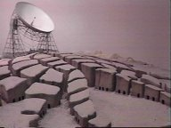
Logopolis
?? (before they started draining entropy)
The people of Logopolis invent block transfer mathematics. Though
the Constructors of Destiny will eventually have a better understanding
of Block-Transfer Computations than the people of Logopolis. Other species that
will make use of this discover are the Gallifreyans, Axos and the
Nestene Consciousness. Logopolis is located outside of Mutter's Stellian Spiral Galaxy (aka the Milky Way Galaxy).
?? (by the time Tecteun returned to Gallifrey)
Circular Gallifreyan begins being
used by the Shobogans.
??
(probably earlier then 4,000,000 BC / before Time Travel / possibly less then 240,000 years before the 1980s AD / must be after the Racnoss ship forms the nucleus of Earth)
The
humanoid Laima live on the drab, and, hot planet Trion (located near
the center of Mutter's Spiral, about 20,000 light years from
earth). The world will come to be known as Tri-on because it will be
inhabited by Laima, Slots, and the Gallifreyan Clansfolk (the Tractators who call this world home appear to be ignored). The word "Laimee" means happiness. They have great knowledge and power and discover the secret of Unified Field Theory. This
theory is also known as the Skasas Paradigm or the God Maker. It
unlocks how the universe works, giving the user complete control of the
basic building blocks of the universe (time, space, matter).
The Unified Field Theory gave the Laima the ability to travel through
time and to alternate universes. But to traverse these dimensions, they
needed to stop the gravitational constant from decreasing. Desiring to
travel to the next highest Universe (a dimension of Thought), they
create the Gravity Generator Control Unit. The Laima leave this Universe and the Slots
will remain behind to care for the central column that slowed the Laima
to occasionally return and visit their homeworld. Those that return
have highly developed morals but under developed bodies.
The Gravity Generator Control Unit of the Laima
This device stops the decay of the
Gravitational Constant and stabilizes it at 6.672x10^-11 N (m/kg)^2
throughout the universe.
The Gravity Generator Control Unit is placed on
Sol III, a world awkwardly placed on one of the arms of Mutter's
Stellian Spiral Galaxy. This world will eventually become known as The
Earth. According to Gallifrey's records, Sol III is one of the only
worlds in the cosmos to
have the word 'the' before its name (ie The Earth). The presence of the
Gravity Control Unit makes physics operate differently around Earth
(this is why it took humans so long time to discover FTL drive). The
world's effect on the laws of physics attracts the attentions of
several other species and serves as a catalyst for the hundreds of
alien invasions that Earth experiences throughout the Humanian Era.
Indeed Earth will become the most frequently attacked, colonized,
exploited, and enslaved world in the 5 Galaxies. The Time Lords seen the humans of the Earth as a race of warriors.
The Matrix also predicts that near the end of the Universe (Event 2),
the Time Travel Technology of the Tellurians (Humans), will surpass the
Time Lords. All of this makes Earth an important Temporal Nexus World (like Solos, Tylers Folly, and possibly Gallifrey) and its history quickly becomes littered with Fixed Points in time.
Many Time Lords will keep a close eye on Earth
for these reasons, though some Time Lords (including the Doctor in his
6th incarnation) don't know that the Gravity Control Unit is on Earth.
The Earth's gravity control unit might be buried beneath
the Indian ocean's gravity distortion (this is a real distortion that
cause a deformation in the ocean). Or it might be located at Stonehenge
(where the Monk built a monument) as it was the first place Tanis
seized when he attacked the Earth.
Could the god knows as Time have been upset at the
Lamia for fixing Gravity? Is this why she becomes so destructive and
Rassilon has to trap her on the planet Time?
??
(almost certainly after the Lamia fix the gravitational constant)
The Archon Science Mages created TARDIS
technology.
The Timehenges of the Archons were scattered across the universe (including the Earth). The original TARDIS Seeds were created by Archon Science Mages. These seeds were probably used to enable
the Timehenges.
-1000 (1000 years before they master time travel / after the Gravity
Control Unit is operational / before most species have developed space travel)
With a basic understanding of temporal
science, the Gallifreyans become a Level 8 Society. While the Nestenes, the Mandragora Helix, the Carrionites, the Eternals, the Weeping Angels, the Vashta Narada, and the Krafayis
focus on the control of space, the Gallifreyans are the only Fledgling Empire to focus on conquest of time. For thousands of years Gallifreyans will
base their time technology on idea that gravity affects all temporal phenomenon.
?? (long before the Vampire Wars begin)
The people of
Gallifrey begin using molecular dispersal chambers as a form of
execution for anyone who threatened Gallifrey or its people. Powerful
particle disseminators break the subject’s body into component
molecules and then those particles were dispersed across time and space
(probably using the Vortex).
-200~?
(before the Time
Scaphes / Artron is still alive after Rassilon comes to power)
The Gallifreyan Professor Artron discovers, names, and
harnesses the power of artron energy.
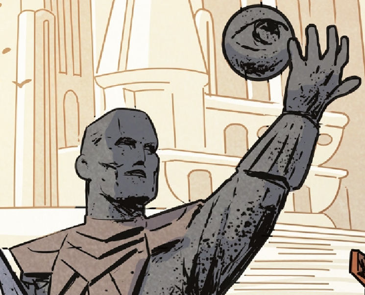
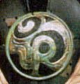
Omega and the Seal of Omega
The Gallifreyan Peylix of the House of Lungbarrow is born. He will eventually become known as Omega by everyone. He is Rassilon's cousin. Omega’s face is fine boned and hansom, but he is somewhat overweight when he is young. Omega suffers from frequent insomnia. He will later be know as Omega, the Greatest Hero Gallifrey ever produced. Legends and his disciples will also know him as Omegon, and the Engineer. Omega and Rassilon will form and lead different Chapterhouses.
-180~? (when Omega is young)
Peylix (aka Omega) hopes to explore the Universe and make a difference. He sees the hatred and evil in the cosmos and hopes that mastering time will give him the ability to make the Universe beautiful. However Omega does not approve of violence as a solution and feels that careful thought and experimentation is the best way to proceed on great endeavors. He is willing to do the most menial tasks in order to achieve his goals.
Taranium is discovered and mined from Gallifrey's moon Pazithi by minesmen. Taranium is one of the rarest and most unstable substances in the universe. A full emm of Taranium is capable of holding vast amounts of temporal energy, enough for 50 space-time jumps in a TARDIS. Enough to shift entire regions through space and time, or to power a hundred DARDISes. Touching it can de-age someone who has become old due to temporal acceleration. This rare element will be essential to Gallifreyan temporal science. Gallifreyan temporal science is based on the fact that revolution-induced gravity exists and affects all temporal manipulation.
?? (back when there were children / before regeneration)
The Garden of Statues: The Weeping Angels take control of a house on Gallifrey and create a temporal paradox. This story becomes a popular fairtale told to time-tots.
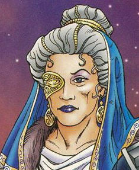
The 508th Pythia
-136.3
(169 years before the the Curse)
The woman who will become the 508th Pythia is born.

Rassilon
-130~?? (Rassilon is young
when he fights the Vampires)
The First Age of Rassilon begins (also known as the Early Rassilon Era): Rassilon
(full name Rassil Onasti Prydonius)
is born. According to the myths of some worlds, Vala the Herborist was mother of Rassilon, and later a legendary Time Lord Solar Engineer. Rassilon's father is a suet shredder. His mother (or wife) was probably
a member of the House Fordfarding (though it's name will later be changed to the House of Rassilon). Rassilon’s house isn’t that far from the Capitol. The House has gardens with trimmed hedges and graveled driveways. Omega is Rassilon's cousin but Rassilon appears to have not be affiliated with the House of Lungbarrow. Omega and Rassilon will later form and lead different Chaptershouses. Susan will be a decedent of Rassilon.
Rassilon will be considered
to be the single greatest figure in Time Lord History
and the Father of Gallifrey.
Rassilon is an Individual (allowing him to shield his thoughts from other Shobogans). Rassilon is a level 7 time sensitive (like the 11th Doctor), and he loves to use the word Time as often as possible in a sentences. He probably has red hair. Rassilon's first body is short even for a male shobogan. Later incarnations of Rassilon will possess tremendous strength and the Time Lords of the future will often depict Rassilon as being very tall, wearing bodystockings, and with well developed
muscles.
Rassilon will become a famous architect, and will be know for being very good at using mathematics to control his destiny. He likes onions. His symbol will be an owl. When he is young, Rassilon’s friends will call him Rass. But by the time of the revolution Omega will be one of the very few who still use this nickname.
??
(during the Dark Times / around the time of the first Vampire War)
At
this point in Gallifrey’s history its night sky filled with ragged
streams of colored stars and galaxies that are close enough to take on
a discernible shape to the unaided eye. By the era of the Last Time
War, Gallifrey’s night sky will be black and with widely dispersed
pinpricks of light.
??
(he outranks
Amnoni)
Quennesander Olyesti Pekkary of
the House of Fordfarding is born. He is Rassilon's nephew.
?? (towards the end of the Dark Times
/ before Blind Fury)
The Krafayis begin swarming across
the cosmos.
-110?? (when Shobogan society was evolving / before there were Time Lords / possibly after the Daemons lose their war with the Kotturuh / a decent amount of time before The Knight, the Fool, and the Dead / not more then a few generations before Monstrous Beauty / possibly when Blind Fury occured)
The Kotturuh
bring their gift of death to the people of Gallifrey. The Gallifreyans are horrified by the numerous
unthinking, motionless, bodies. They call this being sent to the
Ultimate, the Ending, or the Void. The bodies of the dead were usualy burned in a pyre. The Kotturuh impose a maximu lifespan of a few centuries on the Shobogans of Gallifrey. Most deaths would be a result of heart failure.
The official documents and records from the Time of Chaos stated that Shobogans had a normal life-span of 300 years. Without the regenerative powers of modern Gallifreyans, a Gallifreyan
would be confined to wheelchairs before they reached 200 years old. If
their life was prolonged 700 years beyond that point the subject's body
would atrophie until he's only a few feet tall.
-110?? (possibly when the Kotturuh visited Gallifrey? / before Monstrous Beauty)
The Shobogan
physician Androken sees mountains of dead Shobogans.
-110?? (when Rassilon was young / during the Old Times / before ice age / when swords
were the weapon of choice on Gallifrey)
Blind
Fury: According to legend, the village of Slothe located in the
foothills near Mount Perdition. Its people hunted and gathered rather
than develop agriculture, and because of this they devastated the
ecology of the region. So the Gallifreyan God, Death sent its
messenger, the Krafayis to the Village. The Krafayis killed all of the
Villagers except for Presus the Indolent, the son of the village Prelate.
An elderly Seer foresaw a time when Gallifreyans would never die.
Presus found the Krafayis and killed it after three days of combat.
Afterwards he burned the bodies of the village and went to sleep.
Having defeated death, he never died but continued to sleep forever
while be watched over by Time. This story would become a Time Lord fairy tale. Its
possible that these events refer to the Kotturuh bringing the 'gift' of
death to all life in the Universe. Its possible that Pesus might be a
reference to Rassilon who also slept for a billion years after
overcoming death.
-110?? (possibly after ther 507th Pythia was killed by the Kotturuh??)
The 508th Pythia begins her rule.
She has a mask like face, streaked with gold, and long gray hair coiled
with silver wire. She reeks of wood smoke and wears blue furs with
dangling talismans. She will regularly travel the City in a palanquin.
The Book of the Future Legends states that, after the 508th Pythia, the
next ruler will be a man.
-110?? (the time right before the Pythia's curse / before the Time Scoop)
The second Age of the Pythias, known as the Time of Chaos, begins.
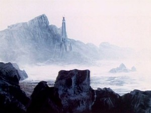
The Death Zone
-110?? (during the Dark Times / after Rassilon begins work / During the time of the 430rd Pythia)
The Pythia decrees that all prisoners of war shall be transported to Gallifrey, and
forced to fight each other to survive. The survivors would gain their freedom. This became known as the
Games
of Death. The Games of Death were considered to be holy and were probably a tribute to the Goddess Death. The architect Rassilon designs the Death Zone. The Death Zone (or Forbidden Zone) is a pentagon shaped valley in the southern hemisphere
as an arena for the Games.
The Zone is about the size of North Wales
and is surrounded by a powerful forcefield that can trap even a TARDIS. Autons
of the Nestene Consciousness were used in the games. Figurines of every
organic being added to the Death Zone are laid out on a board. The games are considered holy and serve as an outlet for the stresses of the telepathic group mind of Gallifreyans.
The Games are constantly going on and the Gallifreyans watch them
on their Public Access Channels. There
are ruins of a great city in the Death Zone - a city that was
devastated and flattened by some catastrophe a long time before The
Five Doctors. Some areas of the Death Zone can only be reached by going
through unstable cave networks or going over very steep mountains.
(Possibly because of the force field) the sky above the Death
Zone is blue. Did
the Games of Death start after the Kotturuh judging the Shobogans? Were
the holy games seen as a way to stave off Death?
?? The Shobogans of the Gallifreyan Empire purchase numerous slaves from the Monaxi slavers. Many of the slaves are from Oshakarm, Tersurrus, and the Star Grellades. Imperial Merchant Ships bring these slaves to Gallifrey. A few treazants can buy a cheap slave. A lot of these slaves end up fighting in the Death Zone. Tersurons are covered in white hair, have huge, jutting, foreheads, and scrunched up tiny faces. They have short, but powerful, arms an can sense the health of the people they touch. They prefer hot weather and sneeze a lot in the cold.
?? (before the Time Program begins)
Shobogan mathematicians, philosophers, physicists, and fantasists realizes that time travel is a theoretical possibility.
?? (a long time before the Curse)
The 508th Pythia meets with a
Master Trader from the South and then foresees the point when the veil
of Time will not be breached by thought but instead will be physically
traveled. She instigates the Time Program and puts the project
under the control of the Academia. The Time Program might have involved performing psycho-genetic surgery on its participants. This neural enhancement
would allow them to visualize and materialize a path in the Astral Vortex (in a manner similar to the Tharils).
The Gallifreyans become a Level 9 Society.
?? (while Omega is still a student)
The Gallifreyans are the only Fledgling Empire to focus on conquest of time. The
Shobogans believe that their understanding of cosmic sciences
(including the science of time) is superior to all of the lesser
species.
Bio-Data-Extracts are taken from Gallifreyans (such as Omega).

Patience?
-110~? (she was young when the Revolution took place, several "generations"
before the 'Infinity Doctor' was born)
Patience is born from a womb. She is a Gallifreyan with dark hair, green eyes, and freckles on her shoulders.
There is a birth mark on her foot. Her DNA is of the same ancestry, but different then the Doctors. She
is born from the House of Blyledge, one of the senior houses in the Prydon Chapter of Glorious Gallifrey. She might have be a member of the Pythia's Order and thus be immune to the Curse?
-110~?
(right before he becomes Omega)
Peylix (Omega) hides a Warp Ellipse
Field Generator in his desk - which gives him 3 years to complete a 3 hour examination. His teacher, Cardinal
Luvis chooses not to punish him.
?? (before Omega learns of the theory)
Despite being
considered to be a lesser species by the Gallifreyans, the Genefrenians
develop the Theory of Temporal Aging. The theory states
that time itself ages and becomes more curved.
?? The Gallifreyans discover that time moves at different speeds in different parts of the Universe, allowing ripples from the center of the galaxy to change history.
-110~? (before turning in the paper)
Peylix (aka Omega) discovers that
to make unlimited time travel possible a nearly endless power source will be needed.
Omega learns about the
Theory of Temporal Aging
based on a theory created by a lesser species known as the Genefrenians. Paylix theorizes that if one could
control the oldest part of Time then one could use the curvature of
that time to attatch an anchor - allowing the control and mapping out
all
of history. To
do so, one would have to spin up a specific type of super massive
singularity and then curve the dimension of time around it so that they
faced the opposite direction. Then, if one could protect oneself
from the time force, the anti-matter, and the radiation, while still
accessing the singularity, one would have a massive power source for
travelling through time. Omega knows the oldest part of time is in the Sector of
Forgotten Souls (probably where the Terminus Timestation is located), and believes that detonating a star in that sector would give the Gallifreyans control of History.
-100?? (4 generations before the Barriers are completed)
Omega beings working on the theories that
will create the Transduction Barriers.
-110~? (before the revolution / when Omega is at the Academy)
Student Peylix (soon to be Omega) submits his
Chronological Studies paper (which is based on
the Genefrenian Theory of Temporal Aging) to Cardinal Luvis.
Luvis is so offended by Peylix ignoring his teachings and, worried about how dangerous the theory is, that he
gives Palix the lowest possible grade ever given at the Academy - Omega. No one in the history of the Academy
has ever scored this low and Palix goes from being a nobody to being famous for his score of Omega.
Palix becomes known universally by the name Omega.
-110? (before they successfully enter the Vortex)
The
Gallifreyans try to use hyperspace to enter the Space-Time
Vortex. This research turns out to be a dead end.
?? Rassilon was the first Gallifreyan to realize that
within the exo-space time continuum
matter and energy are interchangeable via the equation E = MC^3.
??
(probably before entry into the Vortex)
One of the earliest Time Lords, Omega,
discovers De-materialization Theory and
learns to make De-materialization Circuits using the steady state micro-welding technique developed by the Lamadines.
?? Palix (Omega) becomes a Time Plumber. His job might have been to remove temporal energy from the astral vortex tubes.
?? (a while before the Qqaba mission)The Temporal Scientist named Vanderkerian begins working with Omega. They become good friends.
? (long before
she meets the 'Morbius' Doctor)
Patience meets Omega.
Patience and Omega fall in love?
? (When Gallifreyans still had an expanding civilization)
The Gallifreyans launch unmanned survey probe capsules which are designed to enter and analyze the Vortex and then return to Gallifrey to report their findings. Many of these capsules never returned and the researchers never learn why. These gleaming silver probes are the size of a large person with a capsule shaped casing. They hold powerful temporal energies inside that can induce headaches in nearby lesser species. There is a panel that can be raised on the side to reveal the controls, which have a similar design as those found on a TARDIS Console in Standard Theme. The capsules can emit a green beam that can hyper-evolve nearby life-forms into dangerous creatures that will protect the capsule. It’s possible this is based of Zyton 7 radiation. The resulting creatures will never attack a Gallifreyan (even a loomed one).
?? The first Prototype Space-Time Capsules capable of traveling in the Astral Vortex are launched with Gallifreyan Womprats as crew. These capsules can only enter and leave the Vortex not travel through time. They exist in the Vortex and require power to leave it.
?? Early intertemporal experiments involve holding gerbil-like mammalian rodents in self-enclosed temporal cages. The creature’s life-cycles were looped back on each other so thyat would experience the same weeks over and over again. This led to the rodents to develop a parasitic symbiosis with extra dimensional creatures, driving them mad with paranoia.
-102 (102 years before the Eye of Harmony)
The first space-time craft capable of carrying
a Gallifreyan into the Vortex is constructed by Omega. Omega is the first Gallifreyan to survive the Space-Time Vortex.
-102
?
(at least a few years before the return from the Odyssey)
Patience's lover
is a pioneer among the Time Lords. He becomes one of the first Time Lords to enter the Vortex after its discovery. By the time of the Doctor, no one remembers this pioneer's name.
Nobody will remember what Omega's real name was.
??
(long before the Milky Way
was fully formed / possibly after the Time Lords came into existance)
The Time Lords (from the future?) warned
the Phaeron when a renegade Phaeron began to corrupt their minds. In response
the Phaeron closed down their wormhole network and sacrificed their
entire species in order to trap the Glamour in a time well leading to
Deep Time.
-100?
(when Rassilon is young and naive
/ millennia after the war started)
The galaxy
burning war between the Higher Races ends when psychic focusing device
known as the The Art forces them to confront their own agression.
?? (aeons ago / millions of years ago)
According to legend, after centuries of war, the dark god
Valdemar is defeated by the other Great Old Ones. Afterwards the Old
Ones vanish. This disappearance will be described as the 6th Greatest
Mystery in the Universe. In reality the Old Ones has opened a breach
into a higher dimension. A breach that kept expanding until Valdemar
sacrificed himself to contain it, leaving him trapped forever.
??
(during the Dark Times / probably before the Time
Lords / ages ago)
The Higher Evolutionaries known as the Parallel Sect vanish.
??
(probably shortly before the Time
Scoop was invented / after the Gravity Control Unit is
activated)
For most
temporal powers (probably
including the Gallifreyans) one of the first forms of time travels are
osmic projectors which eventually led to full Time Corridor
technology.
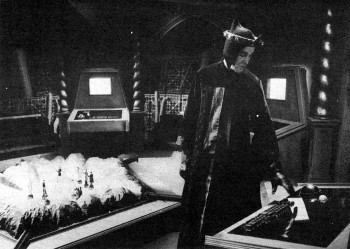
The Death Zone Control Room
The Time Scoop, which uses psychic powers and Taranium, is created. It will be known as the Time Scoop of Rassilon and some records will claim he invented it. This might be why some records state that Rassilon invented the Death Zone.
The Death Zone and the Time Scoop
The Games of Death were considered to be holy and were probably a tribute to the Goddess Death. The architect Rassilon designs the Death Zone. The Death Zone (or Forbidden Zone) is a pentagon shaped valley in the southern hemisphere as an arena for the Games. The Zone is about the size of North Wales and is surrounded by a powerful forcefield that can trap even a TARDIS. Autons of the Nestene Consciousness were used in the games. Figurines of every organic being added to the Death Zone are laid out on a board. The games are considered holy and serve as an outlet for the stresses of the telepathic group mind of Gallifreyans. The Games are constantly going on and the Gallifreyans watch them on their Public Access Channels. There are ruins of a great city in the Death Zone - a city that was devastated and flattened by some catastrophe a long time before The Five Doctors. Some areas of the Death Zone can only be reached by going through unstable cave networks or going over very steep mountains. (Possibly because of the force field) the sky above the Death Zone is blue. Did the Games of Death start after the Kotturuh judging the Shobogans? Were the holy games seen as a way to stave off Death?
The Death Zone is shifted into a temporal bubble. While the weather in the Death Zone be controlled, it is always set for wet and rainy. By this point, several alternate playing boards can be overlaid upon the Death Zone (such as a maze of joined space stations and space craft). The walls of these environments are made of a metal alloy created in zero gravity, and they can be remotely disabled. These alternative play environments are stored in an artificially-created pocket holding dimension when not in use. White sand from Mirphak 2 is imported for the Death Zone because it shows the blood better. Only a TARDIS would be capable of entering the environments stored in the pocket dimension. All players on those boards are trapped in this pocket dimension when the board is not in use.
The Shobogans of the Gallifreyan Empire purchase numerous slaves from the Monaxi slavers. Many of the slaves are from Oshakarm, Tersurrus, and the Star Grellades. Imperial Merchant Ships bring these slaves to Gallifrey. A few treazants can buy a cheap slave. A lot of these slaves end up fighting in the Death Zone. Species throughout the cosmos are kidnapped using the Time Scoop and forced to fight in the Games for the entertainment of the Time Lords. This includes Mandrels, Hypnotrons, and Drashigs. The species from the two ends of eternity fight in one giant paradox.
The Time Scoop is very likely an osmic projector. Using Transmission of Matter Through Interstitial Time (aka a purely muon based temporal drive) the Time Scoop creates Null Spheres (aka Interstitial Motive Bridges) that collect items and aliens from across time and space. The spheres can be detected by a K-9 well in advance of the sphere's appearance in Normal Space. These null time bubbles are then steered through the Vortex through the muon based temporal wake created by the Time Scoop. While most targets are successfully brought to Gallifrey, some occasionally get trapped in time eddies. The trip is strictly one way. Every use of the Time Scoop causes permanent damage to the Web of Time. A Time Scoop’s Motive Bridge can disable a TARDIS’s controls if the operator lets it get too close, but the Scoop has only a 39.7% chance of being able to actually capture a TARDIS. The use of the Time Scoop can be observed using time particle monitors. Once the Eye of Harmony is created, use of the Time Scoop will interfere with Gallifrey's power systems causing planet wide drains. The Time Lords also use the Time Scoop to collect all the extinct species from Gallifrey's past. Some of the more fearsome creatures from Gallifrey's past were placed in the Death Zone.
-70~?
(he is barely an adult in Time's Crucible)
Vael Voryunsti Sheverell is born in his family's
home in Soonwell Valley (about 500 leagues from The City). He
comes from a family of merchants. He has older sisters who later
marry and have children of their own. Vael has a unique psychic power,
pyrokinesis. His anger can cause the source of his irritation to
burst into flames. The Pythia will learn this power from him.
-61??
(at least a few years before the return from the Odyssey
/ 19 years before returning, according to Homer)
Patience's lover embarks on the Odyssey into Deep Time.
Omega encounters the Tantalus Eye and writes about its unique nature. He fails to determine what caused it or its capabilities. The Eye is found in the Tantalus Spiral. The Eye is a vast fold in space-time, connecting two universes. Inside the Eye time accelerated, decelerated, and reversed unpredictably with such time dilation that nearby stars were born, died, and were resurrected within minutes.
?? (more then a week before the Qqaba mission)
The Population III Q Star Qqaba (also known as Jartus) is discovered by Omega in the area of of Mutter's Spiral where the fabric of time is the oldest. This area is located 9.6 LY from Gallifrey in the constellation of Ao and will become known as the Sector of Forgotten Souls. It has 12 times the mass of Gallifrey's GV (yellow dwarf) sun. Omega reconfigures the star to prevent its imminent death.
-57 (24 years berfore the Curse)
The first Gallifreyan Colony world demands its independence.
??
(Was this wormhole opened when Omega and Rassilon first released the Great Vampires from the Dark Universe?)
On the far edge of another galaxy Tecteun’s explorations led her to a
deserted planet with a monument marking a wormhole vortex. She saw the
infinite when she looked into the gateway. This constructed wormhole
connected Universe One with Universe Two – a Universe located
relatively ‘close’ to Universe One. Universe two appeared to be another
dimension or inexplicable alternative universe. The
Master claims that the Boundary porthole (seen in Ascension of the
Cybermen) is the same one that the Doctor was found next too, but I think the writers got confused when they wrote that bit.
Next to the monument, Tecteun
found the planet’s sole occupant, a lost child who appeared to have
been thrown through the gateway and abandoned. Tecteun would claim that
there was no way for her to send the child back through the wormhole. Tecteun took the foundling and adopted her. Together they explored the universe. Time
dilation from Tecteun’s ship might explain how she could leave
Gallifrey on the first space craft, but return millennia later, during
the time of Rassilon. The mother and child would have spent most of
their journeys at relativistic velocities, potentially skipping over
the passage of millions of years.
The Timeless Child
The child looked very much like a female Shobogan child, but her DNA showed her to be a entirely different species. Some say the child had powers that exceeded any that Rassilon may have had. This child was capable of regenerating their entire body whenever they were on the point of death. Unlike modern Gallifreyans, who carried the Legacy of Rassilon, the Timeless Child appeared to have timeless, perpetual, bodily regeneration. Her abilities were connected to the eternal, self-regenerating nature of the Universe. She was immortal, barring accidents and would go on to live for over a billion years. Like the Untempered Schism, the gateway might have surrounded the Child's body with bio-plasmic fields of regenerative chronon energy. This might be why they once claimed they could only regenerate 507 times. Even by the standards of the future Time Lords, the Doctor is very fast as processing and interpreting lots of information. Probability seems to always ensure that the she will survive no matter what danger she faces. The child’s unconscious probably has slight effects on the biodata everyone around her. This child would become known as the Timeless Child, the Other, the Doctor, and Merlin. The Doctor has had some bodies and lives that he doesn't admit to. Aside from the traditional incarnations, the Doctor has at least two other bodies/identities. One of these is the Other. The remaining identity might be a reference to the Guardian of Justice, or the Morbius Doctors. For more information see: Names of the Doctor
The Guardian known as the Toymaker claims to be responsible for making the Doctor’s history into a jigsaw puzzle of contradictions. Like any jigsaw puzzle, all of these pieces should be able to be reassembled to make a single picture.
- In Her Own Words: The Timeless Child believed she was an abandoned outcast of an unknown species – but this might just be what Tecteun told her. Some Gallifreyans believed the Other was not of Gallifrey at all. Tecteun assumed that the child had originated from that other universe, but there other explanations that could account for her presence at the monument. The Doctor would later speculate that she might have originated in Universe One and had been placed at the monument to be collected and taken through it, or possibly her parents had been forcibly taken by the wormhole.
- An Elemental: One of the physical constants of the Normal-Space universe might be the Doctor, as they appears in several very different Universes that were spawned at the same time as this one. The Doctor may be a living equation or elemental function of the Universe. Its possible that the Doctor is the natural balancing agent for the Daleks - a predator to keep them in check.
- A Great Old One: The Great Old One Fenric believed that the Doctor was a Great Old One from the previous Universe. Stories tell of an Archon of the previous universe's High Council, who was known as the Renegade. They state that he entered this Universe at its birth and becomes the Other, and, eventually, the Red Guardian.
- The Child-That-Was-Taken: Other sources indicate she might have been Great Vampire, and is the legendary Child-that-was-Taken that all Great Vampires quest for. Was this wormhole opened when Omega and Rassilon first released the Great Vampires from the Dark Universe? Time Lords have 98% of the same genes as Vampires, and some suspect that Rassilon stole the regenerative genetic material from the Great Vampires. The Doctor believed this theory was only half-true. The Great Vampires came to an agreement with the Kotturuh that they could remain immortal if they feed off the lives of other to achieve that immortality. Was the Timeless Child taken before this agreement could be struck – making the child exempt to the need to feed?
- A Conceptual Entity: From the moment the see him, the residences of the Land of Fiction state that the Doctor is a traitor to their land. The mechanisms that control the Land sees the Doctor as being the ideal and destined master for their world. It describes the Doctor as ageless and outside the bounds of space and time. The High Eternal Death thinks that there might be something unnatural about the Doctor that will keep him from ever falling into her clutches. The Kingmaker claims that the Doctor is able to transcend death because ideas cannot die. This implies that the Doctor is conceptual entity.
- A Human: When unconsciously tapping into his lost memories, the Doctor described himself as a human from the Earth in the late 19th century. As an old man, he constructed a time-machine that appeared to be a police box. Being lonely, he used this time machine to explore the cosmos – eventually finding his way to Gallifrey, where he helped found Time Lord and TARDIS society.
- The Hybrid: The Doctor has claimed to be the child of the Gallifreyan Ulysses and human woman Penelope Gate. It is know that Ulysses and Penelope did have a child around the time of the Hartnell Doctor’s first appearance.
- A Time Lord from the future: According to the "Scrolls of Rassilon" the Other is a renegade/criminal Time Lord who came back in time from a point well after the Time of Legend. The Other's father might have been the Doctor.
- A CAT: The Other might have been a Calculating Animal with a Tail, based off the Felinetta cat-people and engineered by Tecteun. A CAT's instinctive precognitive powers allow it to sense what is possible and what is impossible. She could thus prevent inventors and theorists from wasting their time on foolish projects. She would also have had surprisingly stable biodata. Such CATs were highly revered on Gallifrey.
- A Lungbarrovian: The majority of official records show the Doctor to be a Gallifreyan loomed of the House of Lungbarrow on the planet Gallifrey.
43?? (when the child has grown a bit
older / after the two of them spent time exploring the universe /
probably only a year or two after found at the Monument)
The Shobogan Tecteun brought the
Timeless Child to Gallifrey and raised her. The child called Tecteun
Mother.Solpado might have met Tecteun when she returned to Gallifrey.
Solpado is (or will become) a member of Division and will oversee the
child’s eventual recruitment. Relative to his own people, the Timeless Child might have considered the ancient Shobogans to be a very primitive species.
43?? (probably before first contact with aliens / possibly when Tecteun leaves to find the Timeless Child)
Jak and the Wormhole: A boy named Jak finds a wormhole that leads him to an alien
princess named Jahanna.
Together they stop the Nimon from invading Gallifrey. Jak brings
Jahanna to Gallifrey where she becomes part of his family. The story of Jahanna arriving on Gallifrey might be a reference to the origin of the Timeless Child. This story becomes a popular fairytale told to time-tots.
?
(probably before the Timeless Child becomes well known on
Gallifrey)
A solar engineer (possibly Omega himself) discovers
that the square root of negative three is impossible to
calculate. They have Gallifreyan biological engineers create a
creature that has that knowledge breed into it. It is known as a
Calculating Animal with a Tail (CAT) and was the Gallifreyan Empire's
greatest achievement to date. A CAT's instinctive precognitive powers
allow it to sense what is possible and what is impossible. The CATs
could thus prevent inventors and theorists from wasting their time for
foolish projects. They also had surprisingly stable biodata.
In ancient times, it was to be traditional for every Lord President to have a CAT as an advisor. Cats became revered on Gallifrey as the symbol of intelligence.
The ancestors of the Killer Cats of Gallifrey were
the Felinetta cat-people. They are born in litters, and the females
were much smarter than that males. The Cat-People had very good night
vision and sense of smell, but they hate water. Some are shape
shifters.
The space-time jumping telepathic Kitlings were another race bred from the Felinetta species by the Cheetah-people of the Cheetah Planet.
It should be noted that Rassilon's CAT described in
the "Legacy of Gallifrey" is almost certainly the Timeless Child.
43?? (not long after returning to Gallifrey)
The child was probably sent to school with other Shobogan children. Tecteun probably had a
spouse who helped raise the Timeless Child. The child’s relationship
with this other spouse might have been very loving and supportive. They might
have officially made the child part of their House. Awsok appears to also be one of Tecteun’s names. Is it her family name, or some cover identity? Tecteun saw her own relationship with the child as also
being loving, but she also sees her child as being her experiment.
Tecteun dedicated her life to studying the Timeless Child, but she
couldn’t match her species or point of origin with anything that she
knew. Tecteun also feels that all friendships are experiments.
43?? (before the child’s regenerative powers become know)
There were
probably Gallifreyan officials who came to check on the child from time
to time.
43?? (before the child’s regenerative powers become know)
The child probably got sick at one point.
While playing with another child, the Timeless Child
accidently falls off a cliff. The impact with the ground killed the
child and triggered a
regeneration. This amazed Tecteun.
44??
(after the child’s first regeneration)
Tecteun detailed every fragment of the child’s
genetic material. Tecteun's experiments are cruel and unethical.
Rassilon wins his freeman servant, a Tersuron Factotum named Thrift, for a few treazants in a market place brawl game. Tersurons are covered in white hair, have huge, jutting, foreheads, and scrunched up tiny faces. They have short, but powerful, arms an can sense the health of the people they touch. They prefer hot weather and sneeze a lot in the cold. Thrift calls Rassilon by the title Meyopapa.
?? The Book of the Future Legends states that, after the 508th Pythia, the next ruler will be a man. The Pythia chooses Vael Voryunsti Sheverellas as her successor. She has the Academia single Vael out for special treatment, which is good because he didn't fit in at the Academia. He was the only one to study Time Theory and he failed his final assessments. Vael was a Temporal Physicist. He got the Highest exam quota ever in Temporal Manifold Physics.
The Neo-Technologists faction begin opposing the Old Order and the Pythia. They believe the technology was a useful tool, and not a a nescessary evil (as describe by the Pythia). They saw themselves as heralding the Age of Reason and want to free all slaves and have the government provide free food for everyone. Rassilon becomes the leader of the Neo-Technologists. Rassilon is a supporter of reason as opposed to the Pythia's superstition. The young hero cadets from the Academia make up the heart of the movement.
?? Handstrong is the Pythia’s personal un-man Grelladian guard. There are pillars in the Sanctum. One is a hollow pillar where Handstrong hides waiting to deal with threats.
Patience's lover is hailed as a hero upon his return from the Odyssey. Omega marries Patience on the day of his return to Gallifrey.
?? (before Omega decides to shape the universe)
They build a statute of Omega in the great hall of the Academy. The statue is made of ebonite. While watching the construction of this statue Omega decides to shape the universe.
?? Despite just getting married, Patience's husband spends most of his time 'shaping a new future' for Gallifrey.
?? The Gallifreyans appropriate Block-Transfer Mathematics from the Logopolitans.
?? Omega - the first real scientist of Gallifrey - rebels in the name of science. Omega works at the Science Faculty.
?? (during the time of Rassilon)
Omega becomes the first Solar Engineer.
He and future solar engineers will be scoffed at for their interest in
providing for Gallifrey over exploring the Universe. Omega is also considered to be the first real scientist of the Gallifreyan people.
Rassilon works in the office above the west wing of the Academia Library. At this point, Rassilon is primarily regarded as an great architect and a Stellar Engineer. Rassilon is a scientist and has an impeccable political record. He plans to make the Gallifreyans Lords of Time. But to do this he will have to conquer time and re-make Gallifreyan culture. He will do whatever it takes to accomplish this. They realize that History is written by time travellers from the future.
-42 (9 years before the Curse / after begining his revolutionary politics)
Rassilon renounces the rest of his name (as a protest against the Pythia) and from this point on is known only as Rassilon.
? Omega begins calling Rassilon 'Rass.'
?? (before they have trouble with the prototype)
Rassilon and Omega create a prototype stellar manipulator that has the ability to customize stars. The Gallifreyan science vessel known as the Starkiller Class is designed. With the help of the prototype manipulator a few hundred Starkillers can collapse a star into a singularity. They might have been golden corkscrew shaped vessels.
?? (probably before the Curse)
Omega has at least one child who is probably an ancestor of the Doctor.
-38~ (a few years before the fall of the Pythia)
Workers (slaves) from the Star Grellades cease to be sold by Pen-Shoza. However workers from Oshakarm continue to be sold.
The child is forced to regenerate
several times while growing from child to adolescent. By this point,
Tecteun has become totally obsessed understanding regeneration,
devoting her life to this goal. These nonconsensual regenerations
ruined the relationship between Tecteun and the subject of her
experiments (though the child continued to refer to Tecteun as
‘mother’). The Other is immortal, barring accidents and could live for millions of years. This immortality is not due
to Rassilon. After
having his memory wiped several times, the Timeless Child will, at one
point, claim that he can only regenerate a total of 507 times.
-36.7
(4 years before the Curse)
Shonnzi is born. He has red hair
and before he grows up he is gifted in piloting a ship through the Astral Vortex.
The Chronauts begin training for their first mission on the Time Scaphe by doing hundreds of simulations. The Crew consists of Captain Quennesander Olyesti Pekkary, first son of the House of Fordfarding (his mother is Olyes Dryanasor, grandmother Dryana Shylvarsor, great grandmother Shylvar Karyesti. His uncle is Rassilon.), Second Officer Amnoni Distuyssor Lorizhon oldest daughter of the ancient House of Blyledge, Regulator Chesperl, Reogus Telleem Lacott (the Battery), Quantum Theorist Taspar and the one year old Pilot Shonnzi.
-35 (35 years before the Eye of Harmony)
As part of the Time Program, construction begins on the first Time Scaphe (or Chronoscaphe). The first manned time travel is planned to be ninety minutes in the Vortex, and ninety days up-time (into the future). Future planned missions include spending 90 days in the Vortex while traveling only 90 minutes up-time and another to attempt to travel down-time (into the past).
The Chronoscaphe
The Time Scaphe is made of real matter. The Scaphe has circular body with a curved underside, so that it looks like a sphere from below. It might be completely spherical. It is powered by the mental artron energy of its Chronaut Crew. It takes six psychics to power and crew this time travel capsule. Individual children are born knowing how to navigate the Astral Vortex, but almost all of them forget how to do this as they become adults. This is why 4 year-olds serve as the navigator for the Scaphe. The inside of the Scaphe is cramped. The Scaphe is equipped with a chrono-telemeter. The crew are arrayed around the power core. This is the predecessor of the six sided consoles found in future TARDISes. The functions of each crew member correspond to the function of each of the 6 panels on a console. A holographic sphere hovers over the Scaphe’s heart. The scaphe is launched into orbit before entering the Vortex. It travels though the Astral Vortex via a wormhole. It Uses forced-matter calculation to travel in time and the Chrononauts keep thinking ‘We travel’ while in flight. The Scaphe’s Sustainers make the it feel like a voyage through space. The scaphe is designed to be launched into orbit before entering the Vortex.
? Amnoni plans to have children after the Time Scaphe mission. She has also been named as the next Kithriarch of the House of Blyledge.
The Timeless Child is forced to regenerated again. His new seventh body appears to be about 16 years old. While he will be essential to founding Time Lord science and culture, nobody remembers his name. The only thing which is consistent in all the myths is the title by which he is known: "The Other." It is known that the Other was rather short, but is taller then the McCoy Doctor. He has thin legs, dark skin, black hair, and doesn't look like any of the first seven Doctors (Hartnell - McCoy). He often wears a black cloak with a hood. He quite agile and has talent (and habit) of disappearing as soon everyone’s back is turned. By the time of the first Otherstide the Other will still claim he can not regenerate and Rassilon will not contradict him.
?? (when the Universe was smaller and newer / when weddings were common)
The Grief Collector: Melina makes a deal with the Greif Collector to exchange her tears for money. The Collector kidnaps Melina’s fiancé to increase her grief. With the encouragement of the Doctor, Melina breaks into the Collector’s house and liberates all the people he has captured over the years. In the process the Collector appears to have been drowned in the tears he had collected from tens of thousands of victims. This story becomes a popular fairytale told to time-tots.
?? (when communicators and verbally programmable transporter ‘skimmers’ are available / before temporal manipulation of DNA-biodata is possible / possibly after the Timeless Child arrives on Gallifrey)
Helana and the Beast: In order to free her father from the control of a beast-like creature, Helana agrees to live with the beast. She learns that the Beast had been exposed to and unstable time field which had regressed its body down the evolutionary line. The Doctor is able to provide a temporal antidote turns the beast back into a young man. The 'Doctor' figure might be a Timeless Child. This story becomes a popular fairytale told to time-tots.
?? During the Last Great Time War in Heaven the Time Lords created the several TARDIS to use as tools to try to free the Fendahl. The surviving TARDISes become the the Sphinxes who a know as the Kings of Space. The Sphinxes absorb energy from other dimensions and excrete raw space-time. The Kings of Space are a male and female Sphinx who are the parents of all the others. One is black and one is white. Having no interest in the other Gods the Sphinxes set themselves up on the world of Thule in an area of space on the opposite side of Mutter's Stellian Spiral from Sol III. This area is called Sphinx Space. They get a bunch of human worshipers to take care of their little Sphinxes. The regime of the riddles of the marauding Sphinxes was barbaric. It was said that the Sphinx could see further into the future than any other oracle in the nine corners of the Universe.
-34.3
(shortly before returning to Gallifrey)
The a mighty Hero
and Space Voyager, Haclav Agusti Prydonius journeys to the world of Thule aboard his ship the Apollaten. There he overthrows the regime of the riddles of the Sphinx. It is rumored that this event fulfilled one of the Future Legends. Prydonius has black hair. Lord Prydonius has the same voice as the 13th Master. This
could mean that some (or all) of the bodies available to future
Gallifreyans are based on the ancient founders of Gallifrey, or it
could indicate that, (like the Doctor) the Master is a reincarnation of
someone from the Old Times.
-34.2
(1 year before the Curse / early autumn)
Time's Crucible: Haclav Prydonius returns to Gallifry. At this
point Prydonius dislikes Rassilon's political views and is very popular with the people of Gallifrey. Vael Voryunsti Sheverell
supports the Neo-Technologsts, but agrees to be the Pythia's agent because he wants to rule Gallifrey.
-34.1 (1 year
before the Curse / probably after the Pythia recruits Vael)
Time's Crucible: The Pythia has
Taspar killed in what appears to be a freak skimmer accident. Vael Sheverell
probably used his powers to light the swamp gas around Tasper. The
Pythia arranges for Vael replace him on the Time Scaphe's Crew.
-34
(1 year before the Curse)
The Pythia abolishes sales taxes on slave
trade
-34 (1 year before the Curse)
There are riots and two public stonings
in the cities in the South.
-34.0
(1 year before the Curse / 61 days after Taspar dies / mid-spring)
Time's Crucible: The Time Scaphe is launched. The
first Temporal Transportation System (aka time capsule) to travel the
Astral Vortex is called the Time Scaphe or Chronoscaphe.
The first manned time travel is planned to be ninety minutes in the Vortex, and ninety days up-time (into the future). The Scaphe travels though the Astral Vortex via a wormhole. The Chrononaughts keep thinking ‘We travel’ while in flight. Sustainers make it feel like a voyage through space. The
synthetic air in a scaphe is quite warm when on a voyage. Monitor units
record every aspect of the crew, both internal and external. A
cradle of the future hold plants and tafelshrews for scientific study.
Within the cradle a day passes for every minute the crew
experiances.
-33.8
(around the time when Rassilon meets with the Pythia)
An ice age begins on Gallifrey. This will cause
a partial collapse of Gallifreyan society, known as the
Darkness. The Ice Age might last for 10 million years and only end
around the time the Doctor is in his 8th body.
-33.8
(15 days before the Scaphe is supposed to return)
This is the
last time the 508th Pythia makes a public appearence.
-33.7
(1 year before the Curse / 90 days after the Scaphe launch /
Time's Crucible: The 508th Pythia meets with
a Master Trader from the north, who is in reality Rassilon. The Other is with Rassilon. Rassilon claims that the Shobogans will become lords of time. Rassilon thinks he did some mischief to keep the Pythia from seeing his future. The Other told him not
to do this, but Rassilon did it anyway. Afterwards,
the Pythia discovers she can't see the future
anymore. Rassilon is surprised to learn that whatever he did seems to have disabled all of her powers of prophecy. The
Pythia's inability to see the future might
be related to the weakening of the hypothalamus organ in all
humanoid brains. This organ allowed humanoids to see the higher
dimensions and gave them powerful telepathic abilities. The Pythia refuses to leave her cage. This lack of social engagement fuels the
Neo-Technologist moment. The Time Scaphe fails to return on its appointed day.
?
The Pythia's health begins to fail.
Time's Crucible: The Pythia has a dream about being unable to see the future. The Chronoscaphe is presumed lost, and the Chrononauts are honored as martyrs. Despite it being over 2 months into spring, it snows at the Capitol.
-33.4 (the Summer before the Curse)
The Court of Principals takes over the day-to-day operation of the Gallifreyan Empire. Early cold killed that year's harvest.
-33~ (probably the year of the Curse)
The Gallifreyan Colony worlds begin demanding independence.
-33 (3 years before getting funding for the Hand of Omega project)
With Omega's support, Rassilon begins conducting preliminary research into mapping an controlling History.
?? Roppentheomjer (aka Roppen the Idealist) is a famous stellar engineer. He knows Omega quite well and helped him with his early attempts at manipulating singularities.
?? (before the Vampires are released)
Rassilon decides to harnass a singularity
as a power source for Gallifreyan time travel. This would supply the Gallifreyans with power for centuries. Despite not having developed a proper stellar manipulator, Rassilon takes a fleet of hundreds of Starkillers and tests
his theory. Omega is serving as his engineer
but the Other is not part of this mission.
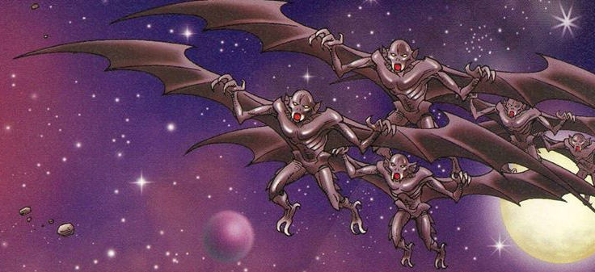
The Yssgaroth
Interference: Rassilon, Omega, and possibly the Other have a great deal of trouble with their prototype stellar manipulator. Despite not having developed a proper stellar manipulator, Rassilon decides to try to harness a singularity as a power source for Gallifreyan time travel. He takes a fleet of hundreds of Starkillers and tests his theory by exploding a device within a yellow star. The star collapses into a singularity (not a Black Hole as Rassilon has yet to invent event horizons). This punched a hole in the Vortex that served as a foundation for the star. It creates a gap in history itself. The explosion creates a dent in the space-time continuum which opens dimensional holes throughout the galaxy. Vast tracks of the Yssgaroth's dark universe are devastated by these wormholes. Thousands of Great Vampires use these dimensional holes to enter N-Space (Normal Space) and swarm across the part of the cosmos that would become the Spiral Politic. Few of Rassilon's Starkillers survive the first attack. Rassilon ensures that nobody knows that it was his experiment that released the Yssgaroth.
The Vampire Factor
In the space beneath space is a "dark universe" made up of the extra-continual alter-matter state of the Vortex’s Under-History. These dimensions aren’t literally evil, but would be considered ‘darker’ by most. In this dark universe are the Old One/Elder God known as the Yssgaroth. Some Time Lords theorize that Yssgaroth weren't a species, but a side effect of the two continual strata trying to coexist. Others theorize that they might be a distillation of the nightmares from Null-Space (N-Space) and that it might be one single gestalt life-form, but in fact they are Time Lords from the dark universe. The civilizations on that side are very different from those in Normal Space and believe that monsters exist in Normal Space. The idea of a breach between the universes fills them with fear. Before Rassilon’s interference, they were located a safe ‘distance’ from Normal-Space.
Vampires are neither life nor inanimate but are a form of Not Life and Not Death. Killing even one was nearly impossible for even the Space Lords of Gallifrey. The Great Vampires can take any form in this universe. Different species would see different creatures when they looked upon them. Other forms include huge winged snakes, bloody thorns that cover entire worlds, planet sized clouds of sun blocking smoke. To some they would even be invisible. But to most (including Gallifreyans) they appear as Giant Vampires which are hundreds of feet tall and as large as a medium-sized town. They had a humanoid shape with grey-green skin, a goblin-like face, black eyes, large ears, and large fangs. They had incredibly efficient cardiovascular systems. A single Great One could mesmerize entire fleets or entire worlds of some species, but not Gallifreyans.
Since the Yssgaroth are the lords of time (ie history incarnate) of the "dark universe" they contaminate this universe's life and history simply by interacting with this universe's Time Lords. This contamination takes the form of the V-Factor which infects all life that comes in contact with. It acts like a parasitic disease, killing the subject and making their body not-dead and, effectively immortal. Local inhabitants on these worlds that become infected with the V-Factor are known as Brood Vampires. Pure Children of the Yssgaroth (those sired directly by a Great Vampire), never tire, never hunger and they never feel pain. Brood Vampires view the Great Ones as their gods and generally try to stay in the same region as their master. If a group loses access to a Great One, one of the Brood Vampires will often grow into a new Great One. This is the only form of reproduction the Great Vampires have. Most Brood Vampires are immune to garlic and all are immune to crosses (but not faith itself). Artificial sunlight and doses of allyl methyl sulphide will weaken a Vampire. Wooden stakes through the heart are effective weapons against Brood Vampires. A Gallifreyan can ingest measured amounts of vampire blood from a humanoid, then be forced to regenerate, and then feeding on the blood and regenerate again. This eventually turns them into a hound like beast (with no knowledge or experience) that will be completely loyal to whoever that person was loyal too. This Mal'akh-like beast has amazing senses and is the perfect Vampire tracking, hunting and killing beast.
Ancient Gallifreyan myth speaks of Blue Fire (aka Mi'en Kalarash) which did horrible things during the Old Times (including both the Time of Night and the Time of Chaos). The Blue Fire is a Great Old One made up of tiny slivers of incremental time that form a time magnet. It lives in the wasteland between realities. The Blue Fire stimulates a sleeping victim's limbic system and feeds on the artron energy generated by the resulting fear and nightmares.
?? (during the Dark Times)
The Prototype Stellar Manipulator (that released the Vampires?) was hidden. It will eventually be uncovered by the Archivist who becomes the Eleven.
?? (after the Citadel of Karn is created /
Slendor the Destroyer's life overlaps with Rassilon's life / after Karn had been at peace for thousands of years / possibly after the discovery of Taranium?)
The Master of Karn known as Drextor was the son of the beloved King (Grand Master?) Matthias. Under Drextor's supervision, Slendor (who would eventually become known as Slendor the Destroyer), designed and built the massive
'Ultimate
Weapon.' This weapon can change the nature of cosmic rays throughout the Universe so that they drain energy from animal tissue and use it to make the air itself burn.
This would weaken and incapacitate all animal species within any targeted area, anywhere in the Universe. The
Weapon can also be configured so that specified species are immune. Selendor also mined a powerful ore from beneath the surface of Gallifrey
(probably Taranium) to create the
Crystal of All-Power.
The Crystal of All-Power
is required to use the weapon as it acts as a catalyst to boost the power of the Ultimate Weapon. When
Drextor was crowned King he announced the completion of the Weapon.
-32.7~
(the Pythia has been in isolation for a year)
This year's winter is dragging well into spring. The hunger and cold fill the Shobogan thought-pool with rumors, gossip, and unrest. The
Admiralty is angry at the Pythia for dropping funding the Empire
Fleet. Instead the money is being spent on the still active Time
Program.
-32.7~
(455 days after the Scaphe launched / precisely 1 year after Rassilon meets with the Pythia / spring
)
Time's Crucible: The Pythia breaks into the Library's museum trying
to find the head of Sphinx. Rassilon steals the Pythia’s steel comb. The Admiralty meets with the Council and
protests the restrictions the Pythia put on the space fleets. Despite
the Admiralty's bad relationship with Rassilon, Prydonius and the rest
of the Admiralty side with Rassilon.
-32.7~
(456 days after the Scaphe launched)
The popular Hero Prydonius meets with Rassilon for a third time. Much
to Rassilon’s surprise, the Hero Prydonius openly denounces the Pythia
in Council, and pledged his loyalty to the Neo-Technologists. In response, the Court of Principals
has the entire Admiralty imprisoned, except for Prydonius. The Council gifted Prydonius with the title of a hereditary noble and sent him off to the distant post Funderell on the asteroid archipelago with orders to observe the Ruta III and
Sontara Warburg dispute. The Sontarans will eventually
conquer each of the 12 Galaxies
(though probably not all at the same time).
-32.7~
(the year of the Curse)
Rassilon is temporarily held under house
arrest on trumped up charges of misappropriation of Academia revenues.
-32.7~
(the year of the Curse / almost certainly a matter of days after she
breaks into the Library )
Worlds across the Empire have sent petitions to
Gallifrey for military aid (against the Yssgaroth?). The
worlds of the Aubert Cluster demand independence. The Pythia has
the Eye of the Sphinx stolen. She uses it to contact Vael.
She also accidently makes contact with the 7th Doctor in her
relative future.
-32.7?
(probably around the time that the augurers and oracles
of the Universe die)
A Guardian decrees that foresight is impossible
and later establishes limits to what can be done with time machines.
-32.7~
(the year of the Curse)
Time's Crucible: As the Gallifreyans begin to define the universe on
"rational" terms, the augurers and oracles of the Universe
die. The Logistomancer of A32K crashes. The Core Sybilline of
the nest worlds of Klanti succumbs to a male which weakens her
power. The Sosostris of the West Spiral dies,
The-Nameless-That-Sees-All in the Northern Constellations goes
silent. The Shadeling Gods die. This could all be a reto-time affect from the Anchoring of the Web of Time in the future.
-32.7~
(after the Pythia has the eye stolen)
Time's Crucible: By this point
the Pythia hasn’t eaten for days. All 100 councilors of the Court of
Principals sit in the temple observing the Pythia, hoping she will name
a viable successor. Privately the Pythia curse the people of Gallifrey
to slowly die in an ageless living death.
?? (not long after Drextor announced the completion of the Ultimate Weapon)
On Karn, King Drextor's own wife poisoned him to
prevent the use of his Ultimate Weapon. A civil war broke out around this time as the Masters of Karn went to war with each other. This led to the collapse of the Empire.
The Last Pythia
"Let the world hear my curse. I am
Gallifrey, sky and rock, flame and flood, womb and bone. When I am no
more, the world shall be barren and empty of new life. It will live a
slow ageless death and come to nothing in its own dust. I have spoken
these words. Let them be fulfilled."
– The Last Pythia
-32.65 (32.65 years before the Eye of
Harmony /
day 128 of the new calender /
the beginning of the Early Rassilon Era /
Intuitive Revolution Night is probably not New Year's Day /
late spring on Gallifrey / at least several days after stealing the Sphinx's eye
/ an aeon after the founding of the Order of the Pythia
/ ~3,500,000,000 BC)
Omega: While Omega is not informed of the plan, Rassilon, the Other, Lord Dowtroyal (Councillor of
the Court of Principals),
General Gimel, and
the rest of Neo-Technologists start the Intuitive
Revelation/Revolution. The young hero cadets from the Academia make up
the heart of the revolution. Protestors beat drums while the Council
Police open fire on the revolutionaries. The Inquisitors begin rounding
up everyone
who
doesn't believe in rationality and locking them up in detention cells. Cardinal Luvis is one of the Space Lords arrested. Rassilon and Omega climb up Mount Plutarch (aka Cadon). They look down and watch as
the west district of the Capitol (which includes the Academia) burn.
Omega objects to the violence of the revolution. The two of them head back toward the Capitol. Rassilon might
have ended centuries of tyranny and blood shed on Gallifrey. Rassilon appears to plan to have many of the people captured by the Inquisitors executed.
Time's Crucible: The Temple is invaded and its icons are smashed.
Vael uses his psionic powers to kill himself and hurt the Pythia. The Realizing that
that she has lost, the 508th Pythia uses the last of her psychic power to curse
Gallifrey and
drops herself into the Crevasse of Memories That Will Be. The Pythia
joins the previous Pythias in the astral vortex – where they scavenge
and feed on the deaths that the Timeless Child will cause. Legends
will later falsely claim that the Pythia was cast into the Crevasse by
the Neo-Technologists. The Pythia's Curse is
known as the Great Schism. Lord
Dowtroyal of the Court of Principals takes not that, before her fall,
the Pythia refered to the next ruler of Gallifrey as 'he.' In order to
end the violence and prevent an Empire-wide revolution, Dowtroyal
chooses to interpret the use of this pronoun as both an official
prophacy and endorsement of Rassilon as her replacement. The Other
meets with Lord Dowtroyal outside the Temple and they head off to find
Rassilon. The Time Scaphe returns to
Gallifrey, and it is seen as a good omen. It's surviving chrononaughts
are made a Young Heros. A transdimensonal Gallifreyan Onion Doll is
stolen from the Doctor’s TARDIS by one of the Chrononauts. Reogus and
Chesperl conceived a child in one of the timelines they
experianced. It is unclear if this conception is undone in the
final timeline or not. Could the Goddess Time
have been upset at Rassilon overthrowing her prophet the Pythia? Is
this why she is so destructive that Rassilon and the Other trap her on
the planet Time?
-32.65 (right after the Curse / day 129? of the new calender)
The Mystery of the New Time: The Pythia's Curse renders all of Gallifrey
(and its Imperial Colonies) sterile. The power of the Kotturuh curse and the Pythia’s curse probably workin a similar way. Numerous
stillborn babies are thrown into the Crevasse of Memories that Will Be
by the Shobogans. Rassilon's daughter is stillborn
and his wife mourns. (Patience and her children are immune to the Pythia's Curse
- possibly she had access to the Elixir?) In
the Outer Wastes of the galaxy, the curse is known as the saga of the
She-Serpent of Gallifrey, and the witch-lore of Cassiopeia names the
Pythia as Countess Bathori, or Baphmet. The Great Schism causes shock-waves in the metafabric of the space-time continuum. Because of her contact with the 7th Doctor (through Vael) the Pythia
decides to channel Gallifrey's procreative impulse to Earth.
?? (during the civil war)
The civil war on Karn leads to the use of
Slendor's Ultimate
Weapon causing an atomic catastrophy across the planet. The world is
devastated and most of the Masters of Karn are killed. Some of the Gallifreyan
colonists on Karn survive but give up on science and live simple lives
as farmers and raiders, far from the remains of the cities. The Citadel
of Karn now lies in ruins and is filled with atomic radiation. After the fall of civilization those who remain in the cities are mutated
by the radiation, becoming giant land crabs known as Clawrantulars.
-32.65 The Council of the Court of Principles continues to rule Gallifrey. These councilors are known as the Lords of Gallifrey. The Council is mostly made up of Arcalians (probably because the councilors are all academians). The leader of the Council is Tussan of the Arcalian Chapter. Lord Dowtroyal is another leader of the Court of Principals. They interpret the Pythia's mention of "He" to mean that Rassilon is to be the next Pythia/Crown of Gallifrey.
? The Intuitive Revolution is followed by the Intuitive Revelation (which the Doctor thinks started to go wrong when Omega was lost). Technically, this is the end of the Dark Time and the beginning of the Time of Legend, but the term Dark Times will often be used to describe anything that happened during or before Rassilon's time. The term Old Time continues to apply.
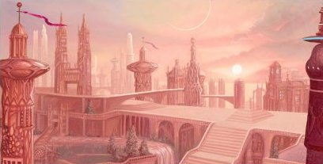
"Now, See what we have created. We have built a world of Reason Triumphant. And it is Good"
-Rassilon
?? (before the Panopticon)
Six heroes are considered the Founders
of Gallifrey. This led to the Six Cardinal Colleges or Chapterhouses. (Yassinbur is another Hero, but not a founder.)
For more information see:
The Chapterhouses
The Founders of Gallifrey
- The First Earl of Prydon Rassilon (Grandmaster of the Prydon Chapter)
- Omega
- The Warrior Apeiron
- The Other (the Timeless Child was one of the founders of Time Lord society)
- Pandak the First
- Lord Patrex (from southern Gallifrey)
- The Doctor (from The Infinity Doctors) is one of the Six Founders in an alternate version of history created by Faction Paradox.
The Six Cardinal College (aka Chapterhouses)
- Prydon: represented by Grandmaster Rassilon
- Arcal: quite possibly represented by Omega or Tussan
- Patrexes: represented by Grandmaster Patrex
- Dromeian: quite possibly represented by Omega
- Cerulean: possibly represented by the Other
- Scendeles:
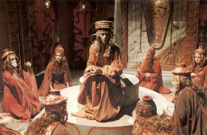
Maren,
Reverend Mother and the Sisterhood of the Flame
Before her fall, the Pythia also ordered her followers to find the fire fountains on the world of Karn. She predicted that they would have immortality and the protection of the Menti Celesti as long as they dwelled there. The followers of the Pythia Heresy go to Karn. Once on Karn, they discover the Elixir of Life that is produced by the Great Flame of Life. They set up the Sisterhood of the Flame of Life, a cult that worships the Great Flame.
The Sisterhood of the Flame of Life
The rituals of the Pythia survive in the form the Sisterhood of the Flame though they the use the title Great Mother instead of Pythia. The Great Mother controls Sisterhood. Reverend Great Mother Maren is already quite old when the Elixir is discovered. Under the Great Mother of the Sisterhood is High Priest Cassandra of the House of Jadedreamers. The red haired Lady Peinforte will be a member of the Sisterhood. By the end of Brain of Morbius there will only be 70 members of the Sisterhood of Karn. The Visionaries are seers from the Sisterhood of Karn. The Sisterhood's mental powers are dependent on their proximity to the Flame. The Sisterhood has spheres which can be useful in imprisoning a Chronovore, though the Sisters end up forgetting their function. The Sisterhood will eventually surpass some areas of Time Lord science, most notably in the fields of biogenetics. Using the Elixir they can prepare potions that will tailor a Gallifreyan’s regeneration to enhance whatever trait is desired (including gender changes). The Sisterhood of the Sacred Flame is said to be tied to the Time Lords until the End of Time.
The Elixir is produced by rare volcanic numismaton gases and the even rarer chemicals in the rocks. It can heal almost any damage, keep a person alive forever and allows a Gallifreyan precise control over their regenerations. Gallifreyans who drink it are rendered fertile again. After consuming the Elixir for long periods, it becomes impossible to die from a lack of food or water. It tastes like a cross between apricots and custard. Patience might have had acces to the Elixir.
?? (before Rassilon is entombed)
Pandak
becomes a member of the Council.
-32.6
(the year of the Curse /
possibly day 162)
The Council gives Rassilon two crowns probably
making him
Crown of the Gallifreyan Empire (the Title held by the Pythia).
Rassilon doesn't want to be the sole ruler of Gallifrey because he is afraid of his own corruption.
The Court of Principals probably becomes known as
the Court of Rassilon.
-32.6 (the year of the Curse / very shortly after the Pythia breaks into the library, as Rassilon's stubbed toe is still hurting)
The Council gives Rassilon a third crown. A
transdimensonal Gallifreyan Onion Doll (that was stolen from the
Doctor’s TARDIS by one of the Chrononauts) is given to Rassilon. This
toy probably leads the Gallifreyans to the discovery of warp matrix
engineering. Rassilon suspends the Time Program. The Other has Pekkary
meet with Omega at the Science Faculty.
-32
(probably the year of the Curse)
The Ice Age that began last year continues. It
might last 10 million years.
?? (after the end of the civil war on Karn)
Because of the
destruction caused by the Ultimate Weapon, the Grand Master of Karn decided that the Crystal of All-Power was be split up into
the Seven crystal
Keys to Doomsday. One for each of the crimes of the people of
Gallifrey: Price, Injustice, Power, Exile, Knowledge, Wisdom, and
Nevermore. Each key hidden in one of the planet's 7 provinces.
?? (after years of work / before sharing the secret of her work with anyone / before construction begins on the Citadel / no more than a few decades before the Doctor joins Division)
At this point
the Universe was effectively immortal and self-regenerating. Studying
this defiance of the thermodynamics of this phenomenon led Tecteun to finally understand Regeneration. Tecteun succeeds in splicing the Timeless Child’s DNA. She
then devises a way to splice into herself the genes which will give her
the ability to regenerate via an injection. She tests it and
successfully regenerates. At this point her technique allows somewhat more chaotic and dangerous forms of regeneration than later iterations. She would appear to have unlimited regenerations, just like the Timeless Child.
?? (before the Qqaba mission)
Patience, the Other
(but probably not Omega)
are all
immortal, barring accidents and could live for millions of years. This immortality is not due to Rassilon. They could have been fixed in time like Jack Harkness.
By the time of the first Otherstide Rassilon probably believes that the Other is not immortal.
 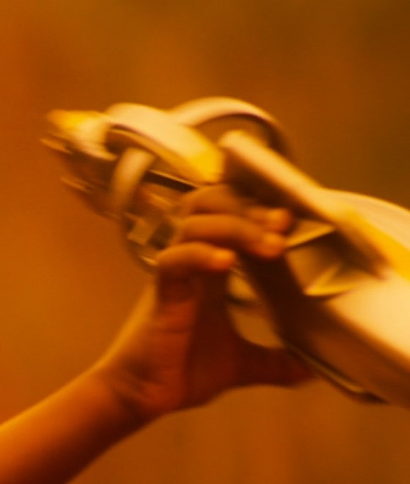
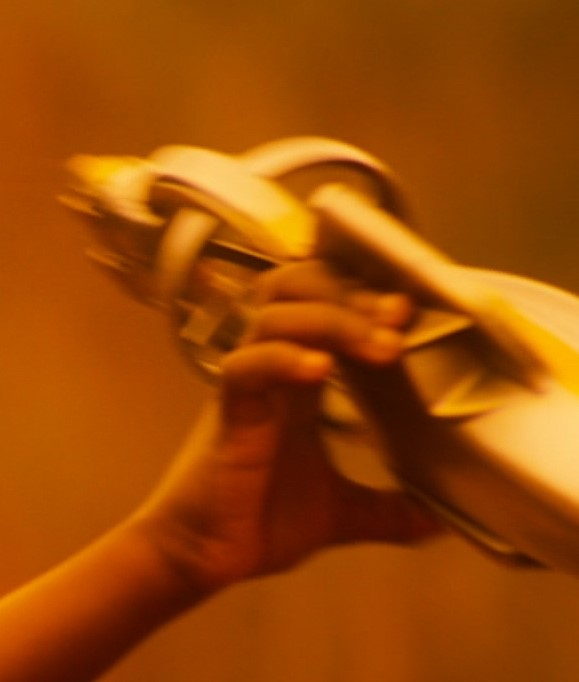
Astrofoils are the standard space transport used by Gallifreyans.
-32? (before his artifacts were created)
Rassilon creates the Foundry to preform his research. Eventually his Foundry will be temporally displaced by a few seconds to make in invisible and insubstantial. Almost everyone of Rassilon's breakthroughs and artefact's are created here. Rassilon's Foundry will eventually become his TARDIS. The Black Scrolls of Rassilon are Rassilon’s research notes. Each scroll acted as a display screen holding vast amount of information about a particular subject. Subjects covered include level 11 science and technology, historical accounts, and Rassilon's personal diary. They date back to before there were Time Lords and will continue to be updated until Rassilon is entombed. They reveal many of the atrocities and tyrannical deeds of Rassilon.
?? (before Rassilon becomes President)
Omega becomes Chief of the Scientific Fraternity.
?? (after Tecteun gives herself the ability to regenerate)
The Shobogans grow in knowledge and ability.
-32? (after the Curse but before the Looms)
The Sisterhood of Karn try to regain power in exchange for offering the Gallifreyans the Elixir of Life to reverse the effects of the Curse. Rassilon refuses this solution.
The Special Executive
-32? (around the time of the Intuitive Revelation)
Rassilon and the Other create the genetic banks known as Looms which can create a new species of Gallifreyans. His first experiments produce a wide range of exotic beings with amazing powers. The results of these experiments become known as the Special Executive or the Bastards of Rassilon. They serve as Rassilon's personal agents and assassins.
-32 (at least a few years before Omega's death)
Rassilon perfects the Genetic Looms to weave new Gallifreyans called the Newborn. This new people are to be a species of scientists. Despite their radically non-human nature, Rassilon eventually decides that the new Gallifreyan species will have a humanoid form (that physically resemble the previous Womb-Born Gallifreyans). Rassilon also creates the sentient living Houses (with bio-architecture), which, with the Looms, stabilize the population after the Pythia's Curse. This leads to the founding of the Great Houses of Gallifrey which will live for millions of years. Each House is controlled by a Housekeeper who is married to the House. Each family receives a Family Loom which produces a set quota of family members as determined by the Honorable Central Pollution Directory in the Capitol. All family members are Cousins to one another and are lead by a Kithriarch. All the Houses are organized into six different Chapterhouses, each of which is led by one of the six Founders of Gallifrey. It will take generations of genetic alteration for the Gallifreyan scientists to re-create the psychic powers the Womb-Born Gallifreyans had. For more information see: Gallifreyan Biology and The Houses
-32 (There have 422 Kithrarchs by the time of Lungbarrow)
The House of Lungbarrow is reformed. Lungbarrow is one of the original five Great Houses.
?? (probably less then 800 years before the First Diaspora / after Rassilon begins sharing the Legacy of Rassilon / at least 16 years before the First Diaspora)
The Gallifreyan who will be known as I.M. Foreman is loomed. He never attends a Gallifreyan Time Academy. Instead he becomes a Priest. He might have stayed in the monasteries and churches in a valley at the foot of a mountain. The chief belief of the old order is that of "no direct action." Foreman will acquire the ability to regenerate before leaving Gallifrey.
-31 (1 year after the Curse)
The Court of Principals allows all the Gallifreyan Colonies who want independence to have it. They declare an end to the Gallifreyan Empire.
? (before the Tempesh Incident)
The Sisterhood still refuses to use aircars
and other technology, but their leadership accepts that science can explain their sorcery.
Rassilon signs the Pact (or Treaty) of Rassilon with the Reverend Mother of the Sisterhood of Karn. The Treaty states that the Time Lords will provide protection to the Sisterhood for as long as they share the Elixir of Life with Time Lords need it during certain rare cases of regenerative trauma.
making it immortal provided it has the life-force of blood to feed on.
The Great Vampires
could transmute almost any energy directed at them.
The Yssgaroth
feed on the blood and souls making them an anathema to all forms of life and meaning.
Vampires can easily smell if someone’s artron energy levels are higher than normal. Just standing within a few meters of a Yssgaroth will drain even a Gallifreyan's life force.
A single one could drain all life from a planet.
If a Time Lord was to venture into the dark universe they would drain the life force of the Yssgaroth in much
the same manner.
Pure Children of the Yssgaroth (those sired directly by a Great Vampire), never tire, never hunger and they never feel
pain. These brood vampires
are servants of the Yssgaroth and the are responsible for killing trillions.
Their only (apparent) ambition is to cause pain and despair
and they spread across the spiral politic,
enslaving and destroying whole star systems.
Their symbols include a bloody thorn bush overrunning a planet, a bleeding, eyeless
lamb on a divine throne, and a skin of desperate devouring faces. They specialized in pain and were known for torturing to death the inhabitants of entire planets - sometimes stretching
their (still living) victim's nervous systems out over several kilometers.
-31? (1000 years before the Eternal War ended /
probably not long after the Curse /
Before TARDISes are invented
/ during the Dark Times
/ after the Eye of Harmony is created / during the Dark Times / before
the opening of the Death Zone / before the attack against the Racnoss)
The Gallifreyans discover other races
whose view of the universe is so alien to the Gallifreyan views that their mere observations threaten Gallifreyan
life. The Time Lords declare war on these beings and try to eliminate them. The Gallifreyans will ally with the Fledgling Empires to fight the Great Old Ones
(including the Yssgaroth), the Racnoss, the Vampires, and the Nestenes. The
first and
greatest of
the Vampire Wars begins. This continuing series of conflicts will eventually become known as the
Eternal War.
?? (when the Time Lords are young /
before the end of Games / possibly after the Gallifreyans encounter Vampires)
The Raston series robots are created by
Rassilon for the _______ . a race that has been around long
before the Time Lords came into existence. The devoted themselves
to building super weapons and then vanished, leaving robots with many
different functions. Raston Warrior Robots will play with their prey. They might have been created to fight the children of the Great Vampires. Raston Warrior Robots are know to be used
extensively in the Games of Death.
The Dark Tower
The Dark Tower (or the Great Tower) is constructed in the center of the Death Zone.
?? (during the Dark Times / before Omega is lost)
Rassilon, Omega,
and someone known as the Watchmaker (almost certainly the Other)
construct the Final Redoubt on an asteroid above the galactic plane of
the Stellian Galaxy. This will stand as the last bastion of
Gallifreyan greatness if their homeworld should fall. Rassilon will later add a Matrix Adjunct that will hold a copy of the brain patterns of the greatest Time Lords who
have ever lived, and the Apocalypse Clock which is capable of crystallizing
and time locking the entire Web of Time at once.
?? (at the Time of Legend)
The Gallifreyans develop Tribophysics. This is the science of interacting surfaces in relative motion.
Studies of Tribophysics will eventually allow the Gallifreyans to slip through dimensions.
??
(after the Gallifreyan's discover the secret of time travel)
The Great Old Ones, known as the Archons were the ones who created TARDIS technology, and their Science Mages created the
seeds for the orignal TARDIS. The Gallifreyans steal these seeds from the Archons. They will use them to create the first TARDIS. They
also clone the seeds to grow all the future TARDIS. This might have been the Validium that was later used to create the Ship and Lolita.
??
(during the Time of Chaos / when Rassilon and Omega were alive /
Before Rassilon becomes President / possibly after the Triumvirate is created /
after the revolution)
Omega,
Rassilon,
and the Other create Validium as the Ultimate Defense for Gallifrey. Validium is
often used by the Time Lords to defend Gallifrey from potential
threats.
Validium: The Ultimate Defense for Gallifrey
Validium is a living metal that is very flexible and elastic, no more ridged per volume then most types of cloth. It can shape itself into whatever its owner asks it to be. Validium has DNA, and becomes sentient when it achieves critical mass (probably about 300 kg). Its creators were somwhat dismayed to discover that while its was not truly sapient, a critical mass does have a discinct personality whose goal was to be free to cause destruction. A critical mass of Validium has the ability to destroy stars, and even a TARDIS within a single moment. While its soul function is to cause destruction, it is capable of shaping planets and can probably travel through time. Its might also be able to turn items into water or other elements. It can read people’s intentions and actions like a book and can forge an empathic mental link with a controller. Much of the controller's memories will copied and stored inside the Validium. Validium also influences peoples subconscious actions and generates an aura of chaos that causes violence and destruction on any world it passes near. While it must obey its controller, Validium can only be deactivated by spliting it up so that it no longer acheives critical mass. It’s not supposed to ever leave Gallifrey and is kept in separate parts in the vaults of the Slaughter House.
Validium is probably used to create the Cold - A substance that exists as a liquid gateway/buffer between the Normal Space and the Yssgaroth-Space of the Vampires. Validium might be related to the Casts or the N-Forms.
The Ship (later to become the Doctor’s TARDIS) and Lolita (later to become the Master's TARDIS) were 2 of 13 Events born within a picosecond of each other. It is likely that all of these events are critical masses of Validium. The Ship was looked upon as being psychologically deficient at the time of its birth. This deficiency might have been caused by the Eternal Wars. Lolita, on the other hand, determines what the Eternal Wars MEANT when she is hours old. Her Mother (probably the Matrix) praised her for this. Both Lolita and the Doctor's TARDIS will be half timeship and half ancient sentient tech from the time of the Vampire Wars. The Doctor's TARDIS 's Exo-Shell is made (in part) of Validium an ancient sentient tech from the time of the Vampire Wars. Thus it is likely that the Doctor's TARDIS is half Validium and half Timeship.
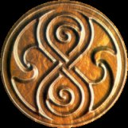
After years of work, Rassilon claims to have designed the Omniscate, that will be called the Great Seal of Rassilon (See above) and will eventually serve as the Seal of the Presidency and the High Council. There is an algorithm imprinted in the atomic structure that can be used to decode Rassilon's cipher. It symbolizes infinity, eternity, honor, and authority. Part of the Omniscate is a stylized version of an Ouroboros (i.e. a garter eating its own tale) twisted into an infinity symbol. This symbol has a negative effect on the neurosystems of the Yssgaroth. The Seal of Rassilon eventually becomes the Seal of the Time Lords and is believed to be a symbol that wards off evil. The Time Lords use the Omniscate to decorate rooms with great power. The most significant of these is the 200 foot diameter one made of Machonite inlaid with bone-white marble that sits in the Panoptican over the Eye of Harmony's Power Mast. A Gallfreyan Legend depicts Rassilon gifting the Omniscate to the Vogans for rescuing him from the Ra’ra’vis. But some sources claim that Rassilon stole the omniscate from the Vogans, and a few Time Lords of this time believe that the Seal predates the Eye of Harmony by thousands of years. It is possible that both accounts are true, and Rassilon stole the design from the Vogan's future. If this is true then the the seal was created by Time herself.
-30~? (3 years after Rassilon and Omega begin privately researching time
travel / the year Rassilon becomes President /
after the beginning of the Eternal Wars /
before the Qqaba Mission)
Rassilon, Omega, and the Other realize that the larger the object they
need to shift into the Vortex the more power that object will need to
generate, but the more power it needs to generate the more massive it
must be. This problem will eventually be solved with three separate
breakthroughs. First they would have to trigger a supernova and harness
its power. Secondly the time capsules will have to be dimensionally
transcendental so the mass of the exterior capsule is small while the
internal engines and genertors can be massive. And lastly the capsule
will rely on an external powers source with energy being broadcast to
them. In will take many years for all of these breakthroughs to be
acheived. Rassilon forges a fragment of The
Book of Future Legends to gain popular support for the Time Program and his other reforms. This fragments covers
the years from the Curse to the end of the Qqaba mission. The Council is very disinterested in the Time Program but the CAT
(the Other)
and the Fragment
convinces
Council Leader Tussan and the Consortium to fund the project.
Omega, the first of the Solar Engineers,
the Other
(the Doctor),
and Rassilon, begin developing a proper Stellar Manipulator that will be called the Hand of Omega. It will be programed in Old High Gallifreyan and will be able to harness and manipulate the entire power output of
a star. Their goal is
to achieve time travel by using a singularity for a power source
(not a Black Hole as Rassilon has yet to invent event horizons). One of Omega's most
highly ranked assistants and good friends is Lady Karidice. She was
probably an expert on stasis halo technology. The details of the Time Program is kept secret from the people of Gallifrey.
?? The Starbreakers
and Omegan Sunskipper ship classes are created. They use vworp drive for interstellar travel
and fusion engines for sub-light maneuvering. The Starbreakers’ fusion engines probably have a maximum sub-light acceleration of 2800 meters per second squared. They have temporal grace circuits and dimensional stabilizers. They
are equipped with the most power computers and the best engineers the
Gallifreyans have. The main control room of the Starbreaker is circular
with a spire in the middle that extends outside the
station. Inside the spire is the vortex dematerialization chamber
that can project a stasis-halo. Stations located in the control room
include 'Black Hole' Power Drain, Event Horizon Flight Control,
De-Materialization and Re-Materialization Regulators, and Vortex
Monitoring.
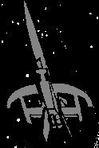
Bow Ship
?? (probably before the Time Lords seal the dimensional
holes)
The Bow Ship is invented to destroy the
Vampires. The steel projectiles launched a Vampires are called Bowspikes.
Powerful electro-magnetic pulses can disable Bowships. Some Bowships can be piloted by a single person. Rassilon might have taken credit for the invention. Rassilon is seen as a soldier in the Vampire War. Rassilon orders the construction of 700 Bow Ships to destroy the Vampires.
The Bow Ships are crewed by
16,000 Prydonians and Arcalians. The Eternal Wars are organized by
Rassilon's personal guard (who will later become the CIA). The fleets are led by General Kopyion Liall a Mahajetsu, Lord Defender of the Faith of the Peoples of Gallifrey. These ships turn the tide of the Vampire War. Unlike species infected with the V-Factor the bodies of Great Vampires
do not crumble to dust upon death.
The Gallifreyan Bow Ships would become known as the stuff of nightmares and legends throughout the early cosmos.
??
(At the height of the Eternal Wars)
Despite protests from the Prydonians and
Arcalians, the Patrex Chapter (and Lord Rassilon) secretly develop sub-matter
block-transfer drones called
N-Forms to fight the Vampires. They are probably called N-Forms in reference to the (incorrect) theory that the
Vampires originated from N-Space (Null-Space). Each N-Form is three times the size of the city of London in the
20th century, but most of this mass exists in pocket dimensions. They are anchored into N-Space via carrier molecules, and these carrier molecules are scattered throughout the Cosmos. The N-forms
are remotely controlled from Gallifrey
but
their intelligence can be raised to near sentience. They usually remain dormant until they detect a V-Stet (Vampiric Waveform caused by the V-Factor). When activated
they burst through the carrier molecule via a dimensional rent and take on a beautiful metallic form. They can
take on any shape and can use dimensional shifts to teleport themselves. An activated N-Form will
home in on the Vampire brain-wave patterns and exterminate any species that has a trace of contamination. It will also
destroy and planets which show signs of the V-Factor. N-Forms will not attack Gallifreyans. N-forms are
secretly used against the Vampires and helps with the
Bow ships' victories.
?? The Other probably witnesses the death of at least one of the Great Vampires first hand.
? (During the Eternal Wars)
General Mirraflex becomes famous.
He later becomes the Grandfather (founder) of the House of Mirraflex. Possibly fearing the eventual War in Heaven,
Grandfather Mirraflex structures the House into an esoteric martial lodge.
??
(when children and marriage were
common / after the Vampire swarm begins / before warp matrix
engineering is discovered)
Cinderella and
the Magic Box: The Doctor helps Cinderella go to Lord Darke’s
ball. Acting the Doctor’s instructions she destroys Lord Darke
and his fellow vampires before the Prince of the Province of Arbesk
could be infected with the V-factor. This story becomes a popular
fairytale told to time-tots.
?? (after the start of the Eternal Wars / after they
started on the Hand of Omega / before the holes are sealed)
Official Time Lord history claims that no Time Lord was ever infected with the V-Factor.
But Rassilon might have allowed himself to become a Vampire. If so, then half of the High Council believed that
he had become a Vampire. In the modern era some Gallifreyans worship Rassilon the Vampire.
?? (probably before the Hand of Omega is finished
/ after the Bowships
/ probably right before heading back to Gallifrey
/ before Tepesh discovers the Foundry
)
Rassilon and Omega seal all the dimensional
holes that allowed the Yssgaroth to enter N-Space.
Forced-matter shells are constructed around the node points where the Yssgaroth entered Normal Space. These shells
were designed to look like planets on the outside. Given the events of Inferno it is possible that Earth is one of these shell-planets.
The Gallifreyans continue to monitor these planets encase the shells should be breached. By this point the Great
Vampires numbers are reduced to a mere thousand.
?? Omega returns to Gallifrey.
-24.06 (the year before Omega dies / day 344 / before the Qqaba mission / after the holes are sealed / after the Logopolitians begin creating CVEs / before overthrowing the Pythia)Rassilon convinces the Vampire King into believing that he is an ally of the Yssgaroth. The Vampire King is impaled by the Great Device known as The Spear, and is severly wounded. Rassilon then tricks the King into falling out of space and time thus ending the first of the Vampire Wars. The Vampire King is severely wounded but ends up escaping into the Exo-Space Universe. The battle with the King Vampire is probably held in the Cassiopeia system and probably involved one of the Logopolitans CVEs. Despite his wounds the Vampire King will manage to send several of his children back into Normal Space to infect others with the V-Factor. This will lead to a continuation of what becomes knows as the Eternal War in Heaven.
?? (after the Vampire King is delt with)
In order to protect Gallifrey from Vampires, the solar engineer Omega constructed a new Second Sun, which he added to Gallifrey's system. This Second Sun is probably a small artificial one for Gallifrey is usually described as having only one sun. Because of the twin suns the planets in system have very short nights.
-24.02
(after Rassilon is declared a Hero of the Eternal War / the year of the Qqaba mission / Day 1)
Rassilon
returns to Gallifrey and is hailed as a warrior and a hero.
By this point in the Eternal War, only 34 Bowships and 1200 crew-members still survive.
The Time Lords of the future will believe Rassilon fought heroically in the Eternal Wars.
?? (right after Rassilon dies and revives / Almost certainly
before the first Otherstide)
Tussan is removed from the Council and
Tussan's CAT
(the Other) joins Rassilon saying "I am the cat that walks by himself and all places are alike to me."
-23.99
(the year Omega dies / day 3)
Omega
and the Other
(aka the Doctor) begin
the final stages of constructing a proper remote stellar manipulator. This device is called the Hand of
Omega
for political reasons.
It has the ability to customize stars.